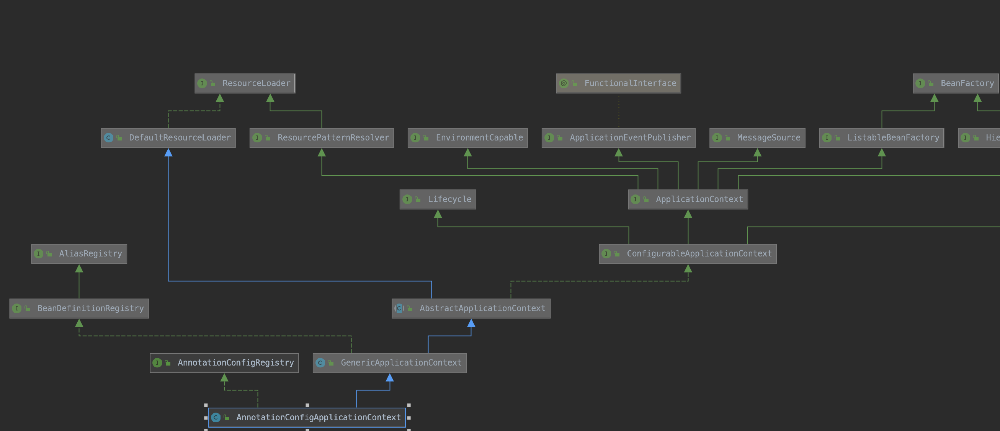
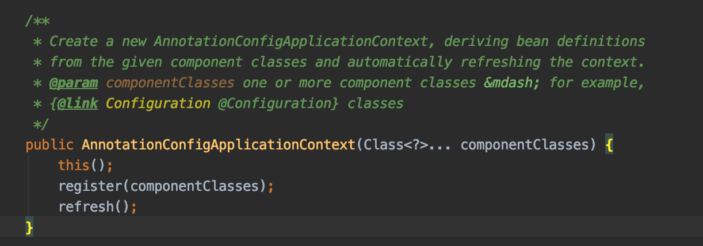
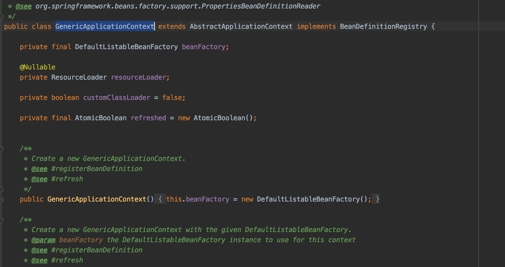
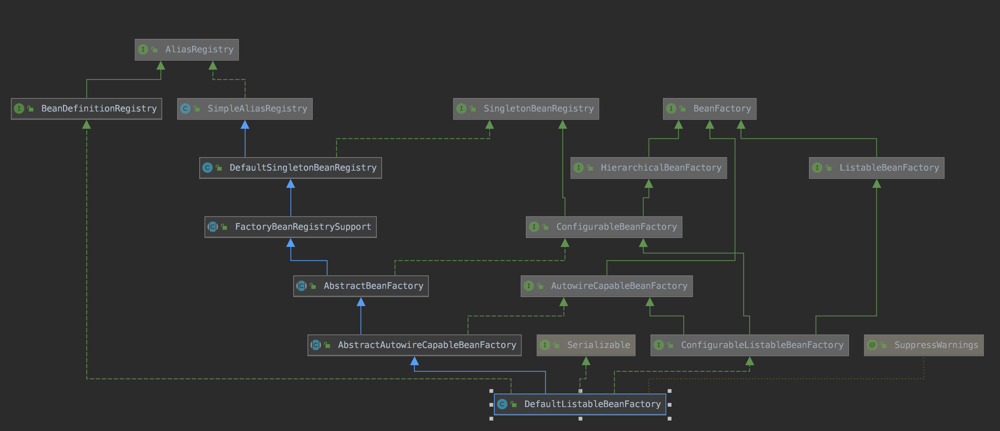
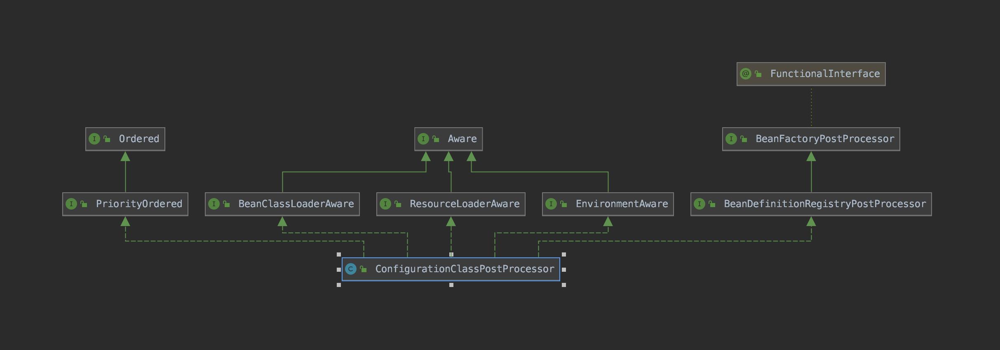
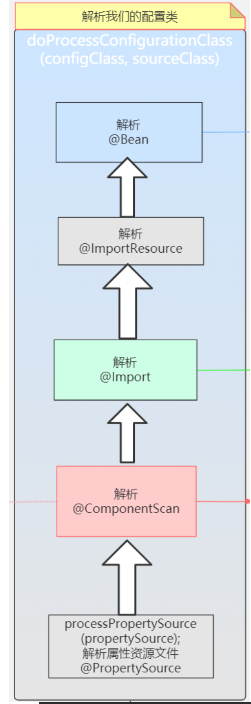

<!DOCTYPE html>


<html lang="zh-CN">


<head>
  <meta charset="utf-8" />
    
  <meta name="viewport" content="width=device-width, initial-scale=1, maximum-scale=1" />
  <title>
    Spring-IOC源码 |  
  </title>
  <meta name="generator" content="hexo-theme-ayer">
  
  <link rel="shortcut icon" href="/favicon.ico" />
  
  
<link rel="stylesheet" href="/dist/main.css">

  
<link rel="stylesheet" href="https://cdn.jsdelivr.net/gh/Shen-Yu/cdn/css/remixicon.min.css">

  
<link rel="stylesheet" href="/css/custom.css">

  
  
<script src="https://cdn.jsdelivr.net/npm/pace-js@1.0.2/pace.min.js"></script>

  
  

  

</head>

</html>

<body>
  <div id="app">
    
      
    <main class="content on">
      <section class="outer">
  <article
  id="post-Spring-IOC源码"
  class="article article-type-post"
  itemscope
  itemprop="blogPost"
  data-scroll-reveal
>
  <div class="article-inner">
    
    <header class="article-header">
       
<h1 class="article-title sea-center" style="border-left:0" itemprop="name">
  Spring-IOC源码
</h1>
 

    </header>
     
    <div class="article-meta">
      <a href="/2020/09/21/Spring-IOC%E6%BA%90%E7%A0%81/" class="article-date">
  <time datetime="2020-09-21T07:20:38.000Z" itemprop="datePublished">2020-09-21</time>
</a>   
<div class="word_count">
    <span class="post-time">
        <span class="post-meta-item-icon">
            <i class="ri-quill-pen-line"></i>
            <span class="post-meta-item-text"> 字数统计:</span>
            <span class="post-count">10.5k</span>
        </span>
    </span>

    <span class="post-time">
        &nbsp; | &nbsp;
        <span class="post-meta-item-icon">
            <i class="ri-book-open-line"></i>
            <span class="post-meta-item-text"> 阅读时长≈</span>
            <span class="post-count">47 分钟</span>
        </span>
    </span>
</div>
 
    </div>
      
    <div class="tocbot"></div>


  
    <div class="article-entry" itemprop="articleBody">
       
  <h3 id="Spring-IOC加载过程"><a href="#Spring-IOC加载过程" class="headerlink" title="Spring-IOC加载过程"></a>Spring-IOC加载过程</h3><h4 id="前言"><a href="#前言" class="headerlink" title="前言"></a>前言</h4><p>Spring 最重要的概念是 IOC 和 AOP，其中IOC又是Spring中的根基</p>
<h4 id="1-实例化容器：AnnotationConfigApplicationContext"><a href="#1-实例化容器：AnnotationConfigApplicationContext" class="headerlink" title="1.实例化容器：AnnotationConfigApplicationContext"></a>1.实例化容器：AnnotationConfigApplicationContext</h4><p>从这里出发：</p>
<figure class="highlight java"><table><tr><td class="gutter"><pre><span class="line">1</span><br><span class="line">2</span><br></pre></td><td class="code"><pre><span class="line"><span class="comment">// 加载spring上下文</span></span><br><span class="line">ApplicationContext context=<span class="keyword">new</span> AnnotationConfigApplicationContext(Start<span class="class">.<span class="keyword">class</span>)</span>;</span><br></pre></td></tr></table></figure>

<a id="more"></a>
<p>可以通过idea工具查看AnnotationConfigApplicationContext类的结构关系</p>
<p></p>
<p>创建AnnotationConfigApplicationContext对象</p>
<p></p>
<p>简单说明：</p>
<ol>
<li>这是一个有参的构造方法，可以接收多个配置类，不过一般情况下，只会传入一个配置类。</li>
<li>这个配置类有两种情况，一种是传统意义上的带上@Configuration注解的配置类，还有一种是没有 带上@Configuration，但是带有@Component，@Import，@ImportResouce，@Service， @ComponentScan等注解的配置类。</li>
</ol>
<h5 id="1-1-先调用this"><a href="#1-1-先调用this" class="headerlink" title="1.1 先调用this()"></a>1.1 先调用this()</h5><p>如下代码：</p>
<figure class="highlight java"><table><tr><td class="gutter"><pre><span class="line">1</span><br><span class="line">2</span><br><span class="line">3</span><br><span class="line">4</span><br><span class="line">5</span><br><span class="line">6</span><br><span class="line">7</span><br><span class="line">8</span><br></pre></td><td class="code"><pre><span class="line"><span class="comment">/**</span></span><br><span class="line"><span class="comment"> * Create a new AnnotationConfigApplicationContext that needs to be populated</span></span><br><span class="line"><span class="comment"> * through &#123;<span class="doctag">@link</span> #register&#125; calls and then manually &#123;<span class="doctag">@linkplain</span> #refresh refreshed&#125;.</span></span><br><span class="line"><span class="comment"> */</span></span><br><span class="line"><span class="function"><span class="keyword">public</span> <span class="title">AnnotationConfigApplicationContext</span><span class="params">()</span> </span>&#123;</span><br><span class="line">   <span class="keyword">this</span>.reader = <span class="keyword">new</span> AnnotatedBeanDefinitionReader(<span class="keyword">this</span>);</span><br><span class="line">   <span class="keyword">this</span>.scanner = <span class="keyword">new</span> ClassPathBeanDefinitionScanner(<span class="keyword">this</span>);</span><br><span class="line">&#125;</span><br></pre></td></tr></table></figure>

<p>此时会创建两个类：</p>
<p>​    this.reader = new AnnotatedBeanDefinitionReader(this)：注解的Bean定义读取器。</p>
<p>（解析：internalConfigurationAnnotationProcessor，internalAutowiredAnnotationProcessor，internalCommonAnnotationProcessor等里面的配置类）</p>
<p> this.scanner = new ClassPathBeanDefinitionScanner(this)：它仅仅是在外面手动调用.scan方法，或者调用参数为String的构造方法，传 入需要扫描的包名才会用到。</p>
<h4 id="2-实例化工厂-DefaultListableBeanFactory"><a href="#2-实例化工厂-DefaultListableBeanFactory" class="headerlink" title="2.实例化工厂:DefaultListableBeanFactory"></a>2.实例化工厂:DefaultListableBeanFactory</h4><p>AnnotationConfigApplicationContext类继承GenericApplicationContext类，故启动时会隐式调用父类的构造方法:</p>
<p>下面代码：</p>
<p></p>
<p>初始化的时候会创建DefaultListableBeanFactory</p>
<figure class="highlight java"><table><tr><td class="gutter"><pre><span class="line">1</span><br><span class="line">2</span><br><span class="line">3</span><br></pre></td><td class="code"><pre><span class="line"><span class="function"><span class="keyword">public</span> <span class="title">GenericApplicationContext</span><span class="params">()</span> </span>&#123;</span><br><span class="line">   <span class="keyword">this</span>.beanFactory = <span class="keyword">new</span> DefaultListableBeanFactory();</span><br><span class="line">&#125;</span><br></pre></td></tr></table></figure>

<p>DefaultListableBeanFactory的关系图:</p>
<p></p>
<p>DefaultListableBeanFactory是相当重要的，从字面意思就可以看出它是一个Bean的工厂，什么是Bean的工厂?当然就是用来生产</p>
<p>和获得Bean的。</p>
<h4 id="3-实例化建BeanDefinition读取器-AnnotatedBeanDefinitionReader"><a href="#3-实例化建BeanDefinition读取器-AnnotatedBeanDefinitionReader" class="headerlink" title="3.实例化建BeanDefinition读取器: AnnotatedBeanDefinitionReader"></a>3.实例化建BeanDefinition读取器: AnnotatedBeanDefinitionReader</h4><p>其主要做了2件事情</p>
<p>1.注册内置BeanPostProcessor </p>
<p>2.注册相关的BeanDefinition</p>
<p>回到AnnotationConfigApplicationContext的无参构造方法，让我们看看Spring在初始化 AnnotatedBeanDefinitionReader的时候做了什么:</p>
<figure class="highlight java"><table><tr><td class="gutter"><pre><span class="line">1</span><br><span class="line">2</span><br><span class="line">3</span><br></pre></td><td class="code"><pre><span class="line"><span class="function"><span class="keyword">public</span> <span class="title">AnnotatedBeanDefinitionReader</span><span class="params">(BeanDefinitionRegistry registry)</span> </span>&#123;</span><br><span class="line">   <span class="keyword">this</span>(registry, getOrCreateEnvironment(registry));</span><br><span class="line">&#125;</span><br></pre></td></tr></table></figure>

<p>这里的BeanDefinitionRegistry就是AnnotationConfigApplicationContext的实例。</p>
<p>这里又直接调 用了此类其他的构造方法:</p>
<figure class="highlight java"><table><tr><td class="gutter"><pre><span class="line">1</span><br><span class="line">2</span><br><span class="line">3</span><br><span class="line">4</span><br><span class="line">5</span><br><span class="line">6</span><br><span class="line">7</span><br></pre></td><td class="code"><pre><span class="line"><span class="function"><span class="keyword">public</span> <span class="title">AnnotatedBeanDefinitionReader</span><span class="params">(BeanDefinitionRegistry registry, Environment environment)</span> </span>&#123;</span><br><span class="line">   Assert.notNull(registry, <span class="string">"BeanDefinitionRegistry must not be null"</span>);</span><br><span class="line">   Assert.notNull(environment, <span class="string">"Environment must not be null"</span>);</span><br><span class="line">   <span class="keyword">this</span>.registry = registry;</span><br><span class="line">   <span class="keyword">this</span>.conditionEvaluator = <span class="keyword">new</span> ConditionEvaluator(registry, environment, <span class="keyword">null</span>);</span><br><span class="line">   AnnotationConfigUtils.registerAnnotationConfigProcessors(<span class="keyword">this</span>.registry);</span><br><span class="line">&#125;</span><br></pre></td></tr></table></figure>

<p>进入registerAnnotationConfigProcessors方法:</p>
<figure class="highlight java"><table><tr><td class="gutter"><pre><span class="line">1</span><br><span class="line">2</span><br><span class="line">3</span><br></pre></td><td class="code"><pre><span class="line"><span class="function"><span class="keyword">public</span> <span class="keyword">static</span> <span class="keyword">void</span> <span class="title">registerAnnotationConfigProcessors</span><span class="params">(BeanDefinitionRegistry registry)</span> </span>&#123;</span><br><span class="line">   registerAnnotationConfigProcessors(registry, <span class="keyword">null</span>);</span><br><span class="line">&#125;</span><br></pre></td></tr></table></figure>

<p>这又是一个门面方法，再点进去，这个方法的返回值Set，但是上游方法并没有去接收这个返回值，所以这 个方法的返回值也不是很重要了，当然方法内部给这个返回值赋值也不重要了。由于这个方法内容比较多， 这里就把最核心的贴出来，这个方法的核心就是注册Spring内置的多个Bean:</p>
<figure class="highlight java"><table><tr><td class="gutter"><pre><span class="line">1</span><br><span class="line">2</span><br><span class="line">3</span><br><span class="line">4</span><br><span class="line">5</span><br></pre></td><td class="code"><pre><span class="line"><span class="keyword">if</span> (!registry.containsBeanDefinition(CONFIGURATION_ANNOTATION_PROCESSOR_BEAN_NAME)) &#123;</span><br><span class="line">   RootBeanDefinition def = <span class="keyword">new</span> RootBeanDefinition(ConfigurationClassPostProcessor<span class="class">.<span class="keyword">class</span>)</span>;</span><br><span class="line">   def.setSource(source);</span><br><span class="line">   beanDefs.add(registerPostProcessor(registry, def, CONFIGURATION_ANNOTATION_PROCESSOR_BEAN_NAME));</span><br><span class="line">&#125;</span><br></pre></td></tr></table></figure>

<ol>
<li>判断容器中是否已经存在了ConfigurationClassPostProcessor Bean</li>
<li>如果不存在(当然这里肯定是不存在的)，就通过RootBeanDefinition的构造方法获得 ConfigurationClassPostProcessor的BeanDefinition，RootBeanDefinition是BeanDefinition的子类</li>
<li>执行registerPostProcessor方法，registerPostProcessor方法内部就是注册Bean，当然这里注册 其他Bean也是一样的流程。</li>
</ol>
<p><strong>BeanDefinition是什么?</strong></p>
<p>上游：</p>
<figure class="highlight java"><table><tr><td class="gutter"><pre><span class="line">1</span><br></pre></td><td class="code"><pre><span class="line"><span class="keyword">public</span> <span class="class"><span class="keyword">interface</span> <span class="title">BeanDefinition</span> <span class="keyword">extends</span> <span class="title">AttributeAccessor</span>, <span class="title">BeanMetadataElement</span> </span>&#123;</span><br></pre></td></tr></table></figure>

<ul>
<li><p>BeanMetadataElement接口:BeanDefinition元数据，返回该Bean的来源</p>
</li>
<li><p>AttributeAccessor接口:提供对BeanDefinition属性操作能力。</p>
</li>
</ul>
<p>它是用来描述Bean的，里面存放着关于Bean的一系列信息，比如Bean的作用域，Bean所对应的Class，是 否懒加载，是否Primary等等，这个BeanDefinition也相当重要，我们以后会常常和它打交道。</p>
<p>registerPostProcessor方法:</p>
<figure class="highlight java"><table><tr><td class="gutter"><pre><span class="line">1</span><br><span class="line">2</span><br><span class="line">3</span><br><span class="line">4</span><br><span class="line">5</span><br><span class="line">6</span><br><span class="line">7</span><br></pre></td><td class="code"><pre><span class="line"><span class="function"><span class="keyword">private</span> <span class="keyword">static</span> BeanDefinitionHolder <span class="title">registerPostProcessor</span><span class="params">(</span></span></span><br><span class="line"><span class="function"><span class="params">      BeanDefinitionRegistry registry, RootBeanDefinition definition, String beanName)</span> </span>&#123;</span><br><span class="line"></span><br><span class="line">   definition.setRole(BeanDefinition.ROLE_INFRASTRUCTURE);</span><br><span class="line">   registry.registerBeanDefinition(beanName, definition);</span><br><span class="line">   <span class="keyword">return</span> <span class="keyword">new</span> BeanDefinitionHolder(definition, beanName);</span><br><span class="line">&#125;</span><br></pre></td></tr></table></figure>

<p>这方法为BeanDefinition设置了一个Role，ROLE_INFRASTRUCTURE代表这是spring内部的，并非用户定义的，然后又调用了registerBeanDefinition方法，再点进去，Oh No，你会发现它是一个接口，没办法直 接点进去了，首先要知道registry实现类是什么，答案是 DefaultListableBeanFactory，核心在于下面两行代码:</p>
<figure class="highlight java"><table><tr><td class="gutter"><pre><span class="line">1</span><br><span class="line">2</span><br></pre></td><td class="code"><pre><span class="line"><span class="keyword">this</span>.beanDefinitionMap.put(beanName, beanDefinition);</span><br><span class="line"><span class="keyword">this</span>.beanDefinitionNames.add(beanName);</span><br></pre></td></tr></table></figure>


<p>至此，我们可以通过打断点，查看DefaultListableBeanFactory就是我们所说的容器，里面放着beanDefinitionMap， beanDefinitionNames，beanDefinitionMap是一个hashMap，beanName作为Key,beanDefinition作 为Value，beanDefinitionNames是一个集合，里面存放了beanName。</p>
<p>DefaultListableBeanFactory中的beanDefinitionMap，beanDefinitionNames也是相当重要的，以 后会经常看到它，最好看到它，第一时间就可以反应出它里面放了什么数据 这里仅仅是注册，可以简单的理解为把一些原料放入工厂，工厂还没有真正的去生产。 上面已经介绍过，这里会一连串注册好几个Bean，在这其中最重要的一个Bean(没有之一)就是 BeanDefinitionRegistryPostProcessor Bean。</p>
<p><strong>ConfigurationClassPostProcessor实现BeanDefinitionRegistryPostProcessor接口， BeanDefinitionRegistryPostProcessor接口又扩展了BeanFactoryPostProcessor接口， BeanFactoryPostProcessor是Spring的扩展点之一，ConfigurationClassPostProcessor是Spring极 为重要的一个类，必须牢牢的记住上面所说的这个类和它的继承关系。</strong></p>
<p></p>
<p>除了注册了ConfigurationClassPostProcessor，还注册了其他Bean，其他Bean也都实现了其他接口，比 如BeanPostProcessor等。<br> BeanPostProcessor接口也是Spring的扩展点之一。<br> 至此，实例化AnnotatedBeanDefinitionReader reader分析完毕。</p>
<h4 id="4-创建BeanDefinition扫描器-ClassPathBeanDefinitionScanner"><a href="#4-创建BeanDefinition扫描器-ClassPathBeanDefinitionScanner" class="headerlink" title="4.创建BeanDefinition扫描器:ClassPathBeanDefinitionScanner"></a>4.创建BeanDefinition扫描器:ClassPathBeanDefinitionScanner</h4><p>由于常规使用方式是不会用到AnnotationConfigApplicationContext里面的scanner的，这里的scanner 仅仅是为了程序员可以手动调用AnnotationConfigApplicationContext对象的scan方法。所以这里就不看 scanner是如何被实例化的了。</p>
<h4 id="5-注册配置类为BeanDefinition-register-annotatedClasses"><a href="#5-注册配置类为BeanDefinition-register-annotatedClasses" class="headerlink" title="5.注册配置类为BeanDefinition: register(annotatedClasses)"></a>5.注册配置类为BeanDefinition: register(annotatedClasses)</h4><p>把目光回到上面，分析第二行代码:</p>
<figure class="highlight java"><table><tr><td class="gutter"><pre><span class="line">1</span><br><span class="line">2</span><br><span class="line">3</span><br><span class="line">4</span><br><span class="line">5</span><br><span class="line">6</span><br></pre></td><td class="code"><pre><span class="line"><span class="function"><span class="keyword">public</span> <span class="title">AnnotationConfigApplicationContext</span><span class="params">(Class&lt;?&gt;... componentClasses)</span> </span>&#123;</span><br><span class="line">   <span class="keyword">this</span>();</span><br><span class="line">  <span class="comment">// 分析这个</span></span><br><span class="line">   register(componentClasses);</span><br><span class="line">   refresh();</span><br><span class="line">&#125;</span><br></pre></td></tr></table></figure>

<p>这里传进去的是一个数组，最终会循环调用如下方法:</p>
<figure class="highlight java"><table><tr><td class="gutter"><pre><span class="line">1</span><br><span class="line">2</span><br><span class="line">3</span><br><span class="line">4</span><br><span class="line">5</span><br><span class="line">6</span><br><span class="line">7</span><br><span class="line">8</span><br><span class="line">9</span><br><span class="line">10</span><br><span class="line">11</span><br><span class="line">12</span><br><span class="line">13</span><br><span class="line">14</span><br><span class="line">15</span><br><span class="line">16</span><br><span class="line">17</span><br><span class="line">18</span><br><span class="line">19</span><br><span class="line">20</span><br><span class="line">21</span><br><span class="line">22</span><br><span class="line">23</span><br><span class="line">24</span><br><span class="line">25</span><br><span class="line">26</span><br><span class="line">27</span><br><span class="line">28</span><br><span class="line">29</span><br><span class="line">30</span><br><span class="line">31</span><br><span class="line">32</span><br><span class="line">33</span><br><span class="line">34</span><br><span class="line">35</span><br><span class="line">36</span><br><span class="line">37</span><br><span class="line">38</span><br><span class="line">39</span><br><span class="line">40</span><br><span class="line">41</span><br><span class="line">42</span><br><span class="line">43</span><br><span class="line">44</span><br><span class="line">45</span><br><span class="line">46</span><br><span class="line">47</span><br><span class="line">48</span><br><span class="line">49</span><br><span class="line">50</span><br><span class="line">51</span><br><span class="line">52</span><br><span class="line">53</span><br><span class="line">54</span><br><span class="line">55</span><br><span class="line">56</span><br><span class="line">57</span><br><span class="line">58</span><br><span class="line">59</span><br></pre></td><td class="code"><pre><span class="line"><span class="comment">/**</span></span><br><span class="line"><span class="comment"> * Register a bean from the given bean class, deriving its metadata from</span></span><br><span class="line"><span class="comment"> * class-declared annotations.</span></span><br><span class="line"><span class="comment"> * <span class="doctag">@param</span> beanClass the class of the bean</span></span><br><span class="line"><span class="comment"> * <span class="doctag">@param</span> name an explicit name for the bean</span></span><br><span class="line"><span class="comment"> * <span class="doctag">@param</span> qualifiers specific qualifier annotations to consider, if any,</span></span><br><span class="line"><span class="comment"> * in addition to qualifiers at the bean class level</span></span><br><span class="line"><span class="comment"> * <span class="doctag">@param</span> supplier a callback for creating an instance of the bean</span></span><br><span class="line"><span class="comment"> * (may be &#123;<span class="doctag">@code</span> null&#125;)</span></span><br><span class="line"><span class="comment"> * <span class="doctag">@param</span> customizers one or more callbacks for customizing the factory's</span></span><br><span class="line"><span class="comment"> * &#123;<span class="doctag">@link</span> BeanDefinition&#125;, e.g. setting a lazy-init or primary flag</span></span><br><span class="line"><span class="comment"> * <span class="doctag">@since</span> 5.0</span></span><br><span class="line"><span class="comment"> */</span></span><br><span class="line"><span class="keyword">private</span> &lt;T&gt; <span class="function"><span class="keyword">void</span> <span class="title">doRegisterBean</span><span class="params">(Class&lt;T&gt; beanClass, @Nullable String name,</span></span></span><br><span class="line"><span class="function"><span class="params">      @Nullable Class&lt;? extends Annotation&gt;[] qualifiers, @Nullable Supplier&lt;T&gt; supplier,</span></span></span><br><span class="line"><span class="function"><span class="params">      @Nullable BeanDefinitionCustomizer[] customizers)</span> </span>&#123;</span><br><span class="line"></span><br><span class="line">   AnnotatedGenericBeanDefinition abd = <span class="keyword">new</span> AnnotatedGenericBeanDefinition(beanClass);</span><br><span class="line">  <span class="comment">//判断是否需要跳过注解，spring中有一个@Condition注解，当不满足条件，这个bean就不会被解析</span></span><br><span class="line">  <span class="keyword">if</span> (<span class="keyword">this</span>.conditionEvaluator.shouldSkip(abd.getMetadata())) &#123;</span><br><span class="line">      <span class="keyword">return</span>;</span><br><span class="line">   &#125;</span><br><span class="line"></span><br><span class="line">   abd.setInstanceSupplier(supplier);</span><br><span class="line">  <span class="comment">//解析bean的作用域，如果没有设置的话，默认为单例</span></span><br><span class="line">   ScopeMetadata scopeMetadata = <span class="keyword">this</span>.scopeMetadataResolver.resolveScopeMetadata(abd);</span><br><span class="line">   abd.setScope(scopeMetadata.getScopeName());</span><br><span class="line">   String beanName = (name != <span class="keyword">null</span> ? name : <span class="keyword">this</span>.beanNameGenerator.generateBeanName(abd, <span class="keyword">this</span>.registry));</span><br><span class="line"></span><br><span class="line">   AnnotationConfigUtils.processCommonDefinitionAnnotations(abd);</span><br><span class="line">   <span class="keyword">if</span> (qualifiers != <span class="keyword">null</span>) &#123;</span><br><span class="line">      <span class="keyword">for</span> (Class&lt;? extends Annotation&gt; qualifier : qualifiers) &#123;</span><br><span class="line">        <span class="comment">//Primary注解优先</span></span><br><span class="line">        <span class="keyword">if</span> (Primary<span class="class">.<span class="keyword">class</span> </span>== qualifier) &#123;</span><br><span class="line">            abd.setPrimary(<span class="keyword">true</span>);</span><br><span class="line">         &#125;</span><br><span class="line">        <span class="comment">//Lazy注解</span></span><br><span class="line">         <span class="keyword">else</span> <span class="keyword">if</span> (Lazy<span class="class">.<span class="keyword">class</span> </span>== qualifier) &#123;</span><br><span class="line">            abd.setLazyInit(<span class="keyword">true</span>);</span><br><span class="line">         &#125;</span><br><span class="line">         <span class="keyword">else</span> &#123;</span><br><span class="line">            abd.addQualifier(<span class="keyword">new</span> AutowireCandidateQualifier(qualifier));</span><br><span class="line">         &#125;</span><br><span class="line">      &#125;</span><br><span class="line">   &#125;</span><br><span class="line">   <span class="keyword">if</span> (customizers != <span class="keyword">null</span>) &#123;</span><br><span class="line">      <span class="keyword">for</span> (BeanDefinitionCustomizer customizer : customizers) &#123;</span><br><span class="line">         customizer.customize(abd);</span><br><span class="line">      &#125;</span><br><span class="line">   &#125;</span><br><span class="line"></span><br><span class="line">   BeanDefinitionHolder definitionHolder = <span class="keyword">new</span> BeanDefinitionHolder(abd, beanName);</span><br><span class="line">   definitionHolder = AnnotationConfigUtils.applyScopedProxyMode(scopeMetadata, definitionHolder, <span class="keyword">this</span>.registry);</span><br><span class="line">  <span class="comment">//注册，最终会调用DefaultListableBeanFactory中的registerBeanDefinition方法去注册，</span></span><br><span class="line">	<span class="comment">//DefaultListableBeanFactory维护着一系列信息，比如beanDefinitionNames，beanDefinitionMap</span></span><br><span class="line">	<span class="comment">//beanDefinitionNames是一个List&lt;String&gt;,用来保存beanName</span></span><br><span class="line">	<span class="comment">//beanDefinitionMap是一个Map,用来保存beanName和beanDefinition</span></span><br><span class="line">   BeanDefinitionReaderUtils.registerBeanDefinition(definitionHolder, <span class="keyword">this</span>.registry);</span><br><span class="line">&#125;</span><br></pre></td></tr></table></figure>

<p>（%%%%一般spring源码中，带do字样的方法才是真正做事的方法！！！）</p>
<ol>
<li>通过AnnotatedGenericBeanDefinition的构造方法，获得配置类的BeanDefinition，这里是不是</li>
</ol>
<p>似曾相似，在注册ConfigurationClassPostProcessor类的时候，也是通过构造方法去获得 BeanDefinition的，只不过当时是通过RootBeanDefinition去获得，现在是通过 AnnotatedGenericBeanDefinition去获得。</p>
<ol start="2">
<li><p>判断需不需要跳过注册，Spring中有一个@Condition注解，如果不满足条件，就会跳过这个类的 注册。</p>
</li>
<li><p>然后是解析作用域，如果没有设置的话，默认为单例。</p>
</li>
<li><p>获得BeanName。</p>
</li>
<li><p>解析通用注解，填充到AnnotatedGenericBeanDefinition，解析的注解为Lazy，Primary， DependsOn，Role，Description。</p>
</li>
<li><p>限定符处理，不是特指@Qualifier注解，也有可能是Primary，或者是Lazy，或者是其他(理论上 是任何注解，这里没有判断注解的有效性)。</p>
</li>
<li><p>把AnnotatedGenericBeanDefinition数据结构和beanName封装到一个对象中(这个不是很重 要，可以简单的理解为方便传参)。</p>
</li>
<li><p>注册，最终会调用DefaultListableBeanFactory中的registerBeanDefinition方法去注册:</p>
<figure class="highlight java"><table><tr><td class="gutter"><pre><span class="line">1</span><br><span class="line">2</span><br><span class="line">3</span><br><span class="line">4</span><br><span class="line">5</span><br><span class="line">6</span><br><span class="line">7</span><br><span class="line">8</span><br><span class="line">9</span><br><span class="line">10</span><br><span class="line">11</span><br><span class="line">12</span><br><span class="line">13</span><br><span class="line">14</span><br><span class="line">15</span><br><span class="line">16</span><br><span class="line">17</span><br><span class="line">18</span><br><span class="line">19</span><br><span class="line">20</span><br><span class="line">21</span><br><span class="line">22</span><br></pre></td><td class="code"><pre><span class="line"><span class="comment">/**</span></span><br><span class="line"><span class="comment"> * Register the given bean definition with the given bean factory.</span></span><br><span class="line"><span class="comment"> * <span class="doctag">@param</span> definitionHolder the bean definition including name and aliases</span></span><br><span class="line"><span class="comment"> * <span class="doctag">@param</span> registry the bean factory to register with</span></span><br><span class="line"><span class="comment"> * <span class="doctag">@throws</span> BeanDefinitionStoreException if registration failed</span></span><br><span class="line"><span class="comment"> */</span></span><br><span class="line"><span class="function"><span class="keyword">public</span> <span class="keyword">static</span> <span class="keyword">void</span> <span class="title">registerBeanDefinition</span><span class="params">(</span></span></span><br><span class="line"><span class="function"><span class="params">      BeanDefinitionHolder definitionHolder, BeanDefinitionRegistry registry)</span></span></span><br><span class="line"><span class="function">      <span class="keyword">throws</span> BeanDefinitionStoreException </span>&#123;</span><br><span class="line"></span><br><span class="line">   <span class="comment">// Register bean definition under primary name.</span></span><br><span class="line">   String beanName = definitionHolder.getBeanName();</span><br><span class="line">   registry.registerBeanDefinition(beanName, definitionHolder.getBeanDefinition());</span><br><span class="line"></span><br><span class="line">   <span class="comment">// Register aliases for bean name, if any.</span></span><br><span class="line">   String[] aliases = definitionHolder.getAliases();</span><br><span class="line">   <span class="keyword">if</span> (aliases != <span class="keyword">null</span>) &#123;</span><br><span class="line">      <span class="keyword">for</span> (String alias : aliases) &#123;</span><br><span class="line">         registry.registerAlias(beanName, alias);</span><br><span class="line">      &#125;</span><br><span class="line">   &#125;</span><br><span class="line">&#125;</span><br></pre></td></tr></table></figure>

</li>
</ol>
<p>这个registerBeanDefinition是不是又有一种似曾相似的感觉，没错，在上面注册Spring内置的Bean的时 候，已经解析过这个方法了，这里就不重复了，此时，让我们再观察下beanDefinitionMap beanDefinitionNames两个变量，除了Spring内置的Bean，还有我们传进来的Bean，这里的Bean当然就 是我们自己的配置类了。</p>
<p>到这里注册配置类也分析完毕了。</p>
<h4 id="6-refresh"><a href="#6-refresh" class="headerlink" title="6.refresh()"></a>6.refresh()</h4><p>可以看到其实到这里，Spring还没有进行扫描，只是实例化了一个工厂，注册了一些内置的Bean和我 们传进去的配置类，真正的大头是在第三行代码:</p>
<figure class="highlight java"><table><tr><td class="gutter"><pre><span class="line">1</span><br><span class="line">2</span><br><span class="line">3</span><br><span class="line">4</span><br><span class="line">5</span><br><span class="line">6</span><br></pre></td><td class="code"><pre><span class="line"><span class="function"><span class="keyword">public</span> <span class="title">AnnotationConfigApplicationContext</span><span class="params">(Class&lt;?&gt;... componentClasses)</span> </span>&#123;</span><br><span class="line">   <span class="keyword">this</span>();</span><br><span class="line">   register(componentClasses);</span><br><span class="line">  <span class="comment">// 这个</span></span><br><span class="line">   refresh();</span><br><span class="line">&#125;</span><br></pre></td></tr></table></figure>

<p>这个方法做了很多事情：</p>
<figure class="highlight java"><table><tr><td class="gutter"><pre><span class="line">1</span><br><span class="line">2</span><br><span class="line">3</span><br><span class="line">4</span><br><span class="line">5</span><br><span class="line">6</span><br><span class="line">7</span><br><span class="line">8</span><br><span class="line">9</span><br><span class="line">10</span><br><span class="line">11</span><br><span class="line">12</span><br><span class="line">13</span><br><span class="line">14</span><br><span class="line">15</span><br><span class="line">16</span><br><span class="line">17</span><br><span class="line">18</span><br><span class="line">19</span><br><span class="line">20</span><br><span class="line">21</span><br><span class="line">22</span><br><span class="line">23</span><br><span class="line">24</span><br><span class="line">25</span><br><span class="line">26</span><br><span class="line">27</span><br><span class="line">28</span><br><span class="line">29</span><br><span class="line">30</span><br><span class="line">31</span><br><span class="line">32</span><br><span class="line">33</span><br><span class="line">34</span><br><span class="line">35</span><br><span class="line">36</span><br><span class="line">37</span><br><span class="line">38</span><br><span class="line">39</span><br><span class="line">40</span><br><span class="line">41</span><br><span class="line">42</span><br><span class="line">43</span><br><span class="line">44</span><br><span class="line">45</span><br><span class="line">46</span><br><span class="line">47</span><br><span class="line">48</span><br><span class="line">49</span><br><span class="line">50</span><br></pre></td><td class="code"><pre><span class="line"><span class="function"><span class="keyword">public</span> <span class="keyword">void</span> <span class="title">refresh</span><span class="params">()</span> <span class="keyword">throws</span> BeansException, IllegalStateException </span>&#123;</span><br><span class="line">   <span class="keyword">synchronized</span> (<span class="keyword">this</span>.startupShutdownMonitor) &#123;</span><br><span class="line">      <span class="comment">// Prepare this context for refreshing.</span></span><br><span class="line">     <span class="comment">//刷新预处理，和主流程关系不大，就是保存了容器的启动时间，启动标志等</span></span><br><span class="line">      prepareRefresh();</span><br><span class="line"></span><br><span class="line">      <span class="comment">// Tell the subclass to refresh the internal bean factory.</span></span><br><span class="line">     <span class="comment">//和主流程关系也不大，最终获得了DefaultListableBeanFactory，</span></span><br><span class="line">			<span class="comment">// DefaultListableBeanFactory实现了ConfigurableListableBeanFactory</span></span><br><span class="line">      ConfigurableListableBeanFactory beanFactory = obtainFreshBeanFactory();</span><br><span class="line"></span><br><span class="line">      <span class="comment">// Prepare the bean factory for use in this context.</span></span><br><span class="line">     	<span class="comment">//还是一些准备工作，添加了两个后置处理器:ApplicationContextAwareProcessor，ApplicationListenerDetector </span></span><br><span class="line">     <span class="comment">//还设置了 忽略自动装配 和 允许自动装配 的接口,如果不存在某个bean的时候，spring就自动注册singleton bean </span></span><br><span class="line">     <span class="comment">//还设置了bean表达式解析器 等</span></span><br><span class="line">      prepareBeanFactory(beanFactory);</span><br><span class="line"></span><br><span class="line">      <span class="keyword">try</span> &#123;</span><br><span class="line">         <span class="comment">// Allows post-processing of the bean factory in context subclasses.</span></span><br><span class="line">        <span class="comment">//这是一个空方法</span></span><br><span class="line">         postProcessBeanFactory(beanFactory);</span><br><span class="line"></span><br><span class="line">         <span class="comment">// Invoke factory processors registered as beans in the context.</span></span><br><span class="line">        <span class="comment">//执行自定义的BeanFactoryProcessor和内置的BeanFactoryProcessor</span></span><br><span class="line">         invokeBeanFactoryPostProcessors(beanFactory);</span><br><span class="line"></span><br><span class="line">         <span class="comment">// Register bean processors that intercept bean creation.</span></span><br><span class="line">        <span class="comment">// 注册BeanPostProcessor</span></span><br><span class="line">         registerBeanPostProcessors(beanFactory);</span><br><span class="line"></span><br><span class="line">         <span class="comment">// Initialize message source for this context.</span></span><br><span class="line">         initMessageSource();</span><br><span class="line"></span><br><span class="line">         <span class="comment">// Initialize event multicaster for this context.</span></span><br><span class="line">         initApplicationEventMulticaster();</span><br><span class="line"></span><br><span class="line">         <span class="comment">// Initialize other special beans in specific context subclasses.</span></span><br><span class="line">         <span class="comment">// 空方法</span></span><br><span class="line">         onRefresh();</span><br><span class="line"></span><br><span class="line">         <span class="comment">// Check for listener beans and register them.       </span></span><br><span class="line">         registerListeners();</span><br><span class="line"></span><br><span class="line">         <span class="comment">// Instantiate all remaining (non-lazy-init) singletons.</span></span><br><span class="line">        <span class="comment">// bean的实例化在这里</span></span><br><span class="line">         finishBeanFactoryInitialization(beanFactory);</span><br><span class="line"></span><br><span class="line">         <span class="comment">// Last step: publish corresponding event.</span></span><br><span class="line">         finishRefresh();</span><br><span class="line">      &#125;</span><br></pre></td></tr></table></figure>

<h5 id="6-1-prepareRefresh"><a href="#6-1-prepareRefresh" class="headerlink" title="6.1 prepareRefresh"></a>6.1 prepareRefresh</h5><p>从命名来看，就知道这个方法主要做了一些刷新前的准备工作，和主流程关系不大，主要是保存了容器的启动时间，启动标志等。</p>
<h5 id="6-2-ConfigurableListableBeanFactory-beanFactory-obtainFreshBeanFactory"><a href="#6-2-ConfigurableListableBeanFactory-beanFactory-obtainFreshBeanFactory" class="headerlink" title="6.2 ConfigurableListableBeanFactory beanFactory = obtainFreshBeanFactory()"></a>6.2 ConfigurableListableBeanFactory beanFactory = obtainFreshBeanFactory()</h5><p>这个方法和主流程关系也不是很大，可以简单的认为，就是把beanFactory取出来而已。XML模式下会在这里读取BeanDefinition。</p>
<h5 id="6-3-prepareBeanFactory"><a href="#6-3-prepareBeanFactory" class="headerlink" title="6.3 prepareBeanFactory"></a>6.3 prepareBeanFactory</h5><figure class="highlight java"><table><tr><td class="gutter"><pre><span class="line">1</span><br><span class="line">2</span><br><span class="line">3</span><br><span class="line">4</span><br></pre></td><td class="code"><pre><span class="line"> <span class="comment">// Prepare the bean factory for use in this context.</span></span><br><span class="line"> <span class="comment">//还是一些准备工作，添加了两个后置处理器:ApplicationContextAwareProcessor，ApplicationListenerDetector </span></span><br><span class="line"> <span class="comment">//还设置了 忽略自动装配 和 允许自动装配 的接口,如果不存在某个bean的时候，spring就自动注册singleton bean //还设置了bean表达式解析器 等</span></span><br><span class="line">prepareBeanFactory(beanFactory);</span><br></pre></td></tr></table></figure>

<p>这代码相比前面两个就比较重要了，我们需要点进去好好看看，做了什么操作:</p>
<figure class="highlight java"><table><tr><td class="gutter"><pre><span class="line">1</span><br><span class="line">2</span><br><span class="line">3</span><br><span class="line">4</span><br><span class="line">5</span><br><span class="line">6</span><br><span class="line">7</span><br><span class="line">8</span><br><span class="line">9</span><br><span class="line">10</span><br><span class="line">11</span><br><span class="line">12</span><br><span class="line">13</span><br><span class="line">14</span><br><span class="line">15</span><br><span class="line">16</span><br><span class="line">17</span><br><span class="line">18</span><br><span class="line">19</span><br><span class="line">20</span><br><span class="line">21</span><br><span class="line">22</span><br><span class="line">23</span><br><span class="line">24</span><br><span class="line">25</span><br><span class="line">26</span><br><span class="line">27</span><br><span class="line">28</span><br><span class="line">29</span><br><span class="line">30</span><br><span class="line">31</span><br><span class="line">32</span><br><span class="line">33</span><br><span class="line">34</span><br><span class="line">35</span><br><span class="line">36</span><br><span class="line">37</span><br><span class="line">38</span><br><span class="line">39</span><br><span class="line">40</span><br><span class="line">41</span><br><span class="line">42</span><br><span class="line">43</span><br><span class="line">44</span><br><span class="line">45</span><br><span class="line">46</span><br><span class="line">47</span><br><span class="line">48</span><br><span class="line">49</span><br><span class="line">50</span><br><span class="line">51</span><br><span class="line">52</span><br><span class="line">53</span><br></pre></td><td class="code"><pre><span class="line"><span class="comment">/**</span></span><br><span class="line"><span class="comment"> * Configure the factory's standard context characteristics,</span></span><br><span class="line"><span class="comment"> * such as the context's ClassLoader and post-processors.</span></span><br><span class="line"><span class="comment"> * <span class="doctag">@param</span> beanFactory the BeanFactory to configure</span></span><br><span class="line"><span class="comment"> */</span></span><br><span class="line"><span class="function"><span class="keyword">protected</span> <span class="keyword">void</span> <span class="title">prepareBeanFactory</span><span class="params">(ConfigurableListableBeanFactory beanFactory)</span> </span>&#123;</span><br><span class="line">   <span class="comment">// Tell the internal bean factory to use the context's class loader etc.</span></span><br><span class="line">   beanFactory.setBeanClassLoader(getClassLoader());</span><br><span class="line">  <span class="comment">//设置bean表达式解析器</span></span><br><span class="line">   beanFactory.setBeanExpressionResolver(<span class="keyword">new</span> StandardBeanExpressionResolver(beanFactory.getBeanClassLoader()));</span><br><span class="line">   <span class="comment">//属性编辑器支持</span></span><br><span class="line">  beanFactory.addPropertyEditorRegistrar(<span class="keyword">new</span> ResourceEditorRegistrar(<span class="keyword">this</span>, getEnvironment()));</span><br><span class="line"></span><br><span class="line">   <span class="comment">// Configure the bean factory with context callbacks.</span></span><br><span class="line">  <span class="comment">// Configure the bean factory with context callbacks. </span></span><br><span class="line">  <span class="comment">//添加一个后置处理器:ApplicationContextAwareProcessor，此后置处理处理器实现了BeanPostProcessor接口</span></span><br><span class="line">   beanFactory.addBeanPostProcessor(<span class="keyword">new</span> ApplicationContextAwareProcessor(<span class="keyword">this</span>));</span><br><span class="line">   beanFactory.ignoreDependencyInterface(EnvironmentAware<span class="class">.<span class="keyword">class</span>)</span>;</span><br><span class="line">   beanFactory.ignoreDependencyInterface(EmbeddedValueResolverAware<span class="class">.<span class="keyword">class</span>)</span>;</span><br><span class="line">   beanFactory.ignoreDependencyInterface(ResourceLoaderAware<span class="class">.<span class="keyword">class</span>)</span>;</span><br><span class="line">   beanFactory.ignoreDependencyInterface(ApplicationEventPublisherAware<span class="class">.<span class="keyword">class</span>)</span>;</span><br><span class="line">   beanFactory.ignoreDependencyInterface(MessageSourceAware<span class="class">.<span class="keyword">class</span>)</span>;</span><br><span class="line">   beanFactory.ignoreDependencyInterface(ApplicationContextAware<span class="class">.<span class="keyword">class</span>)</span>;</span><br><span class="line"></span><br><span class="line">   <span class="comment">// BeanFactory interface not registered as resolvable type in a plain factory.</span></span><br><span class="line">   <span class="comment">// MessageSource registered (and found for autowiring) as a bean.</span></span><br><span class="line">   beanFactory.registerResolvableDependency(BeanFactory<span class="class">.<span class="keyword">class</span>, <span class="title">beanFactory</span>)</span>;</span><br><span class="line">   beanFactory.registerResolvableDependency(ResourceLoader<span class="class">.<span class="keyword">class</span>, <span class="title">this</span>)</span>;</span><br><span class="line">   beanFactory.registerResolvableDependency(ApplicationEventPublisher<span class="class">.<span class="keyword">class</span>, <span class="title">this</span>)</span>;</span><br><span class="line">   beanFactory.registerResolvableDependency(ApplicationContext<span class="class">.<span class="keyword">class</span>, <span class="title">this</span>)</span>;</span><br><span class="line"></span><br><span class="line">   <span class="comment">// Register early post-processor for detecting inner beans as ApplicationListeners.</span></span><br><span class="line">  <span class="comment">//添加一个后置处理器:ApplicationListenerDetector，此后置处理器实现了BeanPostProcessor接口</span></span><br><span class="line">   beanFactory.addBeanPostProcessor(<span class="keyword">new</span> ApplicationListenerDetector(<span class="keyword">this</span>));</span><br><span class="line"></span><br><span class="line">   <span class="comment">// Detect a LoadTimeWeaver and prepare for weaving, if found.</span></span><br><span class="line">   <span class="keyword">if</span> (beanFactory.containsBean(LOAD_TIME_WEAVER_BEAN_NAME)) &#123;</span><br><span class="line">      beanFactory.addBeanPostProcessor(<span class="keyword">new</span> LoadTimeWeaverAwareProcessor(beanFactory));</span><br><span class="line">      <span class="comment">// Set a temporary ClassLoader for type matching.</span></span><br><span class="line">      beanFactory.setTempClassLoader(<span class="keyword">new</span> ContextTypeMatchClassLoader(beanFactory.getBeanClassLoader()));</span><br><span class="line">   &#125;</span><br><span class="line"></span><br><span class="line">   <span class="comment">// Register default environment beans.</span></span><br><span class="line">   <span class="keyword">if</span> (!beanFactory.containsLocalBean(ENVIRONMENT_BEAN_NAME)) &#123;</span><br><span class="line">      beanFactory.registerSingleton(ENVIRONMENT_BEAN_NAME, getEnvironment());</span><br><span class="line">   &#125;</span><br><span class="line">   <span class="keyword">if</span> (!beanFactory.containsLocalBean(SYSTEM_PROPERTIES_BEAN_NAME)) &#123;</span><br><span class="line">      beanFactory.registerSingleton(SYSTEM_PROPERTIES_BEAN_NAME, getEnvironment().getSystemProperties());</span><br><span class="line">   &#125;</span><br><span class="line">   <span class="keyword">if</span> (!beanFactory.containsLocalBean(SYSTEM_ENVIRONMENT_BEAN_NAME)) &#123;</span><br><span class="line">      beanFactory.registerSingleton(SYSTEM_ENVIRONMENT_BEAN_NAME, getEnvironment().getSystemEnvironment());</span><br><span class="line">   &#125;</span><br><span class="line">&#125;</span><br></pre></td></tr></table></figure>

<p>主要做了如下的操作:</p>
<ol>
<li><p>设置了一个类加载器</p>
</li>
<li><p>设置了bean表达式解析器</p>
</li>
<li><p>添加了属性编辑器的支持</p>
</li>
<li><p>添加了一个后置处理器:ApplicationContextAwareProcessor，此后置处理器实现了BeanPostProcessor接口 </p>
</li>
<li><p>设置了一些忽略自动装配的接口</p>
</li>
<li><p>设置了一些允许自动装配的接口，并且进行了赋值操作</p>
</li>
<li><p>在容器中还没有XX的bean的时候，帮我们注册beanName为XX的singleton bean</p>
</li>
</ol>
<h5 id="6-4-postProcessBeanFactory-beanFactory"><a href="#6-4-postProcessBeanFactory-beanFactory" class="headerlink" title="6.4 postProcessBeanFactory(beanFactory)"></a>6.4 postProcessBeanFactory(beanFactory)</h5><p>这是一个空方法，可能以后Spring会进行扩展把。</p>
<h5 id="6-5-invokeBeanFactoryPostProcessors-beanFactory"><a href="#6-5-invokeBeanFactoryPostProcessors-beanFactory" class="headerlink" title="6.5 invokeBeanFactoryPostProcessors(beanFactory)"></a>6.5 invokeBeanFactoryPostProcessors(beanFactory)</h5><p>从方法名字来看，引用bean工厂的后指处理器（很重要）</p>
<p>代码很多，有很多我也看不懂，就拿出流程性的东西看看，很多方法只明白大概意思，里面的具体代码没有去看。</p>
<figure class="highlight java"><table><tr><td class="gutter"><pre><span class="line">1</span><br><span class="line">2</span><br><span class="line">3</span><br><span class="line">4</span><br><span class="line">5</span><br><span class="line">6</span><br><span class="line">7</span><br><span class="line">8</span><br><span class="line">9</span><br><span class="line">10</span><br><span class="line">11</span><br><span class="line">12</span><br><span class="line">13</span><br><span class="line">14</span><br><span class="line">15</span><br></pre></td><td class="code"><pre><span class="line"><span class="comment">/**</span></span><br><span class="line"><span class="comment"> * Instantiate and invoke all registered BeanFactoryPostProcessor beans,</span></span><br><span class="line"><span class="comment"> * respecting explicit order if given.</span></span><br><span class="line"><span class="comment"> * &lt;p&gt;Must be called before singleton instantiation.</span></span><br><span class="line"><span class="comment"> */</span></span><br><span class="line"><span class="function"><span class="keyword">protected</span> <span class="keyword">void</span> <span class="title">invokeBeanFactoryPostProcessors</span><span class="params">(ConfigurableListableBeanFactory beanFactory)</span> </span>&#123;</span><br><span class="line">   PostProcessorRegistrationDelegate.invokeBeanFactoryPostProcessors(beanFactory, getBeanFactoryPostProcessors());</span><br><span class="line"></span><br><span class="line">   <span class="comment">// Detect a LoadTimeWeaver and prepare for weaving, if found in the meantime</span></span><br><span class="line">   <span class="comment">// (e.g. through an @Bean method registered by ConfigurationClassPostProcessor)</span></span><br><span class="line">   <span class="keyword">if</span> (beanFactory.getTempClassLoader() == <span class="keyword">null</span> &amp;&amp; beanFactory.containsBean(LOAD_TIME_WEAVER_BEAN_NAME)) &#123;</span><br><span class="line">      beanFactory.addBeanPostProcessor(<span class="keyword">new</span> LoadTimeWeaverAwareProcessor(beanFactory));</span><br><span class="line">      beanFactory.setTempClassLoader(<span class="keyword">new</span> ContextTypeMatchClassLoader(beanFactory.getBeanClassLoader()));</span><br><span class="line">   &#125;</span><br><span class="line">&#125;</span><br></pre></td></tr></table></figure>

<p>让我们看看第一个小方法的第二个参数:</p>
<figure class="highlight java"><table><tr><td class="gutter"><pre><span class="line">1</span><br><span class="line">2</span><br><span class="line">3</span><br><span class="line">4</span><br><span class="line">5</span><br><span class="line">6</span><br><span class="line">7</span><br></pre></td><td class="code"><pre><span class="line"><span class="comment">/**</span></span><br><span class="line"><span class="comment"> * Return the list of BeanFactoryPostProcessors that will get applied</span></span><br><span class="line"><span class="comment"> * to the internal BeanFactory.</span></span><br><span class="line"><span class="comment"> */</span></span><br><span class="line"><span class="function"><span class="keyword">public</span> List&lt;BeanFactoryPostProcessor&gt; <span class="title">getBeanFactoryPostProcessors</span><span class="params">()</span> </span>&#123;</span><br><span class="line">   <span class="keyword">return</span> <span class="keyword">this</span>.beanFactoryPostProcessors;</span><br><span class="line">&#125;</span><br></pre></td></tr></table></figure>

<p>这里获得的是BeanFactoryPostProcessor，当我看到这里的时候，愣住了，通过IDEA的查找引用功能，我发现这个集合永远都是空的， 根本没有代码为这个集合添加数据，很久都没有想通，后来才知道我们在外部可以手动添加一个后置处理器，而不是交给Spring去扫描， 查资料即:</p>
<figure class="highlight java"><table><tr><td class="gutter"><pre><span class="line">1</span><br><span class="line">2</span><br><span class="line">3</span><br></pre></td><td class="code"><pre><span class="line"><span class="number">1</span>. AnnotationConfigApplicationContext annotationConfigApplicationContext = <span class="keyword">new</span> AnnotationConfigApplicationContext(AppConfig<span class="class">.<span class="keyword">class</span>)</span>;</span><br><span class="line"></span><br><span class="line"><span class="number">2</span>. annotationConfigApplicationContext.addBeanFactoryPostProcessor(XXX);</span><br></pre></td></tr></table></figure>

<p>一般没人这么做！</p>
<p>然后进入：</p>
<figure class="highlight java"><table><tr><td class="gutter"><pre><span class="line">1</span><br></pre></td><td class="code"><pre><span class="line">PostProcessorRegistrationDelegate.invokeBeanFactoryPostProcessors(beanFactory, getBeanFactoryPostProcessors());</span><br></pre></td></tr></table></figure>

<p>即：</p>
<figure class="highlight java"><table><tr><td class="gutter"><pre><span class="line">1</span><br><span class="line">2</span><br><span class="line">3</span><br><span class="line">4</span><br><span class="line">5</span><br><span class="line">6</span><br><span class="line">7</span><br><span class="line">8</span><br><span class="line">9</span><br><span class="line">10</span><br><span class="line">11</span><br><span class="line">12</span><br><span class="line">13</span><br><span class="line">14</span><br><span class="line">15</span><br><span class="line">16</span><br><span class="line">17</span><br><span class="line">18</span><br><span class="line">19</span><br><span class="line">20</span><br><span class="line">21</span><br><span class="line">22</span><br><span class="line">23</span><br><span class="line">24</span><br><span class="line">25</span><br><span class="line">26</span><br><span class="line">27</span><br><span class="line">28</span><br><span class="line">29</span><br><span class="line">30</span><br><span class="line">31</span><br><span class="line">32</span><br><span class="line">33</span><br><span class="line">34</span><br><span class="line">35</span><br><span class="line">36</span><br><span class="line">37</span><br><span class="line">38</span><br><span class="line">39</span><br><span class="line">40</span><br><span class="line">41</span><br><span class="line">42</span><br><span class="line">43</span><br><span class="line">44</span><br><span class="line">45</span><br><span class="line">46</span><br><span class="line">47</span><br><span class="line">48</span><br><span class="line">49</span><br><span class="line">50</span><br><span class="line">51</span><br><span class="line">52</span><br><span class="line">53</span><br><span class="line">54</span><br><span class="line">55</span><br><span class="line">56</span><br><span class="line">57</span><br><span class="line">58</span><br><span class="line">59</span><br><span class="line">60</span><br><span class="line">61</span><br><span class="line">62</span><br><span class="line">63</span><br><span class="line">64</span><br><span class="line">65</span><br><span class="line">66</span><br><span class="line">67</span><br><span class="line">68</span><br><span class="line">69</span><br><span class="line">70</span><br><span class="line">71</span><br><span class="line">72</span><br><span class="line">73</span><br><span class="line">74</span><br><span class="line">75</span><br><span class="line">76</span><br><span class="line">77</span><br><span class="line">78</span><br><span class="line">79</span><br><span class="line">80</span><br><span class="line">81</span><br><span class="line">82</span><br><span class="line">83</span><br><span class="line">84</span><br><span class="line">85</span><br><span class="line">86</span><br><span class="line">87</span><br><span class="line">88</span><br><span class="line">89</span><br><span class="line">90</span><br><span class="line">91</span><br><span class="line">92</span><br><span class="line">93</span><br><span class="line">94</span><br><span class="line">95</span><br><span class="line">96</span><br><span class="line">97</span><br><span class="line">98</span><br><span class="line">99</span><br><span class="line">100</span><br><span class="line">101</span><br><span class="line">102</span><br><span class="line">103</span><br><span class="line">104</span><br><span class="line">105</span><br><span class="line">106</span><br><span class="line">107</span><br><span class="line">108</span><br><span class="line">109</span><br><span class="line">110</span><br><span class="line">111</span><br><span class="line">112</span><br><span class="line">113</span><br><span class="line">114</span><br><span class="line">115</span><br><span class="line">116</span><br><span class="line">117</span><br><span class="line">118</span><br><span class="line">119</span><br><span class="line">120</span><br><span class="line">121</span><br><span class="line">122</span><br><span class="line">123</span><br><span class="line">124</span><br><span class="line">125</span><br><span class="line">126</span><br><span class="line">127</span><br><span class="line">128</span><br><span class="line">129</span><br><span class="line">130</span><br><span class="line">131</span><br><span class="line">132</span><br><span class="line">133</span><br><span class="line">134</span><br></pre></td><td class="code"><pre><span class="line"><span class="function"><span class="keyword">public</span> <span class="keyword">static</span> <span class="keyword">void</span> <span class="title">invokeBeanFactoryPostProcessors</span><span class="params">(</span></span></span><br><span class="line"><span class="function"><span class="params">      ConfigurableListableBeanFactory beanFactory, List&lt;BeanFactoryPostProcessor&gt; beanFactoryPostProcessors)</span> </span>&#123;</span><br><span class="line"></span><br><span class="line">   <span class="comment">// Invoke BeanDefinitionRegistryPostProcessors first, if any.</span></span><br><span class="line">   Set&lt;String&gt; processedBeans = <span class="keyword">new</span> HashSet&lt;&gt;();</span><br><span class="line"></span><br><span class="line">   <span class="keyword">if</span> (beanFactory <span class="keyword">instanceof</span> BeanDefinitionRegistry) &#123;</span><br><span class="line">      BeanDefinitionRegistry registry = (BeanDefinitionRegistry) beanFactory;</span><br><span class="line">      List&lt;BeanFactoryPostProcessor&gt; regularPostProcessors = <span class="keyword">new</span> ArrayList&lt;&gt;();</span><br><span class="line">      List&lt;BeanDefinitionRegistryPostProcessor&gt; registryProcessors = <span class="keyword">new</span> ArrayList&lt;&gt;();</span><br><span class="line">			<span class="comment">// 循环传进来的beanFactoryPostProcessors，正常情况下，beanFactoryPostProcessors肯定没有数据 </span></span><br><span class="line">     <span class="comment">// 因为beanFactoryPostProcessors是获得手动添加的，而不是spring扫描的</span></span><br><span class="line">		<span class="comment">// 只有手动调用annotationConfigApplicationContext.addBeanFactoryPostProcessor(XXX)才会有数据</span></span><br><span class="line">      <span class="keyword">for</span> (BeanFactoryPostProcessor postProcessor : beanFactoryPostProcessors) &#123;</span><br><span class="line">         <span class="keyword">if</span> (postProcessor <span class="keyword">instanceof</span> BeanDefinitionRegistryPostProcessor) &#123;</span><br><span class="line">            BeanDefinitionRegistryPostProcessor registryProcessor =</span><br><span class="line">                  (BeanDefinitionRegistryPostProcessor) postProcessor;</span><br><span class="line">            registryProcessor.postProcessBeanDefinitionRegistry(registry);</span><br><span class="line">            registryProcessors.add(registryProcessor);</span><br><span class="line">         &#125;</span><br><span class="line">         <span class="keyword">else</span> &#123;</span><br><span class="line">            regularPostProcessors.add(postProcessor);</span><br><span class="line">         &#125;</span><br><span class="line">      &#125;</span><br><span class="line"></span><br><span class="line">      <span class="comment">// Do not initialize FactoryBeans here: We need to leave all regular beans</span></span><br><span class="line">      <span class="comment">// uninitialized to let the bean factory post-processors apply to them!</span></span><br><span class="line">      <span class="comment">// Separate between BeanDefinitionRegistryPostProcessors that implement</span></span><br><span class="line">      <span class="comment">// PriorityOrdered, Ordered, and the rest.</span></span><br><span class="line">      List&lt;BeanDefinitionRegistryPostProcessor&gt; currentRegistryProcessors = <span class="keyword">new</span> ArrayList&lt;&gt;();</span><br><span class="line"></span><br><span class="line">      <span class="comment">// First, invoke the BeanDefinitionRegistryPostProcessors that implement PriorityOrdered.</span></span><br><span class="line">      String[] postProcessorNames =</span><br><span class="line">            beanFactory.getBeanNamesForType(BeanDefinitionRegistryPostProcessor<span class="class">.<span class="keyword">class</span>, <span class="title">true</span>, <span class="title">false</span>)</span>;</span><br><span class="line">      <span class="keyword">for</span> (String ppName : postProcessorNames) &#123;</span><br><span class="line">         <span class="keyword">if</span> (beanFactory.isTypeMatch(ppName, PriorityOrdered<span class="class">.<span class="keyword">class</span>)) </span>&#123;</span><br><span class="line">            currentRegistryProcessors.add(beanFactory.getBean(ppName, BeanDefinitionRegistryPostProcessor<span class="class">.<span class="keyword">class</span>))</span>;</span><br><span class="line">            processedBeans.add(ppName);</span><br><span class="line">         &#125;</span><br><span class="line">      &#125;</span><br><span class="line">      sortPostProcessors(currentRegistryProcessors, beanFactory);</span><br><span class="line">      registryProcessors.addAll(currentRegistryProcessors);</span><br><span class="line">      invokeBeanDefinitionRegistryPostProcessors(currentRegistryProcessors, registry);</span><br><span class="line">      currentRegistryProcessors.clear();</span><br><span class="line"></span><br><span class="line">      <span class="comment">// Next, invoke the BeanDefinitionRegistryPostProcessors that implement Ordered.</span></span><br><span class="line">      postProcessorNames = beanFactory.getBeanNamesForType(BeanDefinitionRegistryPostProcessor<span class="class">.<span class="keyword">class</span>, <span class="title">true</span>, <span class="title">false</span>)</span>;</span><br><span class="line">      <span class="keyword">for</span> (String ppName : postProcessorNames) &#123;</span><br><span class="line">         <span class="keyword">if</span> (!processedBeans.contains(ppName) &amp;&amp; beanFactory.isTypeMatch(ppName, Ordered<span class="class">.<span class="keyword">class</span>)) </span>&#123;</span><br><span class="line">            currentRegistryProcessors.add(beanFactory.getBean(ppName, BeanDefinitionRegistryPostProcessor<span class="class">.<span class="keyword">class</span>))</span>;</span><br><span class="line">            processedBeans.add(ppName);</span><br><span class="line">         &#125;</span><br><span class="line">      &#125;</span><br><span class="line">      sortPostProcessors(currentRegistryProcessors, beanFactory);</span><br><span class="line">      registryProcessors.addAll(currentRegistryProcessors);</span><br><span class="line">      invokeBeanDefinitionRegistryPostProcessors(currentRegistryProcessors, registry);</span><br><span class="line">      currentRegistryProcessors.clear();</span><br><span class="line"></span><br><span class="line">      <span class="comment">// Finally, invoke all other BeanDefinitionRegistryPostProcessors until no further ones appear.</span></span><br><span class="line">      <span class="keyword">boolean</span> reiterate = <span class="keyword">true</span>;</span><br><span class="line">      <span class="keyword">while</span> (reiterate) &#123;</span><br><span class="line">         reiterate = <span class="keyword">false</span>;</span><br><span class="line">         postProcessorNames = beanFactory.getBeanNamesForType(BeanDefinitionRegistryPostProcessor<span class="class">.<span class="keyword">class</span>, <span class="title">true</span>, <span class="title">false</span>)</span>;</span><br><span class="line">         <span class="keyword">for</span> (String ppName : postProcessorNames) &#123;</span><br><span class="line">            <span class="keyword">if</span> (!processedBeans.contains(ppName)) &#123;</span><br><span class="line">               currentRegistryProcessors.add(beanFactory.getBean(ppName, BeanDefinitionRegistryPostProcessor<span class="class">.<span class="keyword">class</span>))</span>;</span><br><span class="line">               processedBeans.add(ppName);</span><br><span class="line">               reiterate = <span class="keyword">true</span>;</span><br><span class="line">            &#125;</span><br><span class="line">         &#125;</span><br><span class="line">         sortPostProcessors(currentRegistryProcessors, beanFactory);</span><br><span class="line">         registryProcessors.addAll(currentRegistryProcessors);</span><br><span class="line">         invokeBeanDefinitionRegistryPostProcessors(currentRegistryProcessors, registry);</span><br><span class="line">         currentRegistryProcessors.clear();</span><br><span class="line">      &#125;</span><br><span class="line"></span><br><span class="line">      <span class="comment">// Now, invoke the postProcessBeanFactory callback of all processors handled so far.</span></span><br><span class="line">      invokeBeanFactoryPostProcessors(registryProcessors, beanFactory);</span><br><span class="line">      invokeBeanFactoryPostProcessors(regularPostProcessors, beanFactory);</span><br><span class="line">   &#125;</span><br><span class="line"></span><br><span class="line">   <span class="keyword">else</span> &#123;</span><br><span class="line">      <span class="comment">// Invoke factory processors registered with the context instance.</span></span><br><span class="line">      invokeBeanFactoryPostProcessors(beanFactoryPostProcessors, beanFactory);</span><br><span class="line">   &#125;</span><br><span class="line"></span><br><span class="line">   <span class="comment">// Do not initialize FactoryBeans here: We need to leave all regular beans</span></span><br><span class="line">   <span class="comment">// uninitialized to let the bean factory post-processors apply to them!</span></span><br><span class="line">   String[] postProcessorNames =</span><br><span class="line">         beanFactory.getBeanNamesForType(BeanFactoryPostProcessor<span class="class">.<span class="keyword">class</span>, <span class="title">true</span>, <span class="title">false</span>)</span>;</span><br><span class="line"></span><br><span class="line">   <span class="comment">// Separate between BeanFactoryPostProcessors that implement PriorityOrdered,</span></span><br><span class="line">   <span class="comment">// Ordered, and the rest.</span></span><br><span class="line">   List&lt;BeanFactoryPostProcessor&gt; priorityOrderedPostProcessors = <span class="keyword">new</span> ArrayList&lt;&gt;();</span><br><span class="line">   List&lt;String&gt; orderedPostProcessorNames = <span class="keyword">new</span> ArrayList&lt;&gt;();</span><br><span class="line">   List&lt;String&gt; nonOrderedPostProcessorNames = <span class="keyword">new</span> ArrayList&lt;&gt;();</span><br><span class="line">   <span class="keyword">for</span> (String ppName : postProcessorNames) &#123;</span><br><span class="line">      <span class="keyword">if</span> (processedBeans.contains(ppName)) &#123;</span><br><span class="line">         <span class="comment">// skip - already processed in first phase above</span></span><br><span class="line">      &#125;</span><br><span class="line">      <span class="keyword">else</span> <span class="keyword">if</span> (beanFactory.isTypeMatch(ppName, PriorityOrdered<span class="class">.<span class="keyword">class</span>)) </span>&#123;</span><br><span class="line">         priorityOrderedPostProcessors.add(beanFactory.getBean(ppName, BeanFactoryPostProcessor<span class="class">.<span class="keyword">class</span>))</span>;</span><br><span class="line">      &#125;</span><br><span class="line">      <span class="keyword">else</span> <span class="keyword">if</span> (beanFactory.isTypeMatch(ppName, Ordered<span class="class">.<span class="keyword">class</span>)) </span>&#123;</span><br><span class="line">         orderedPostProcessorNames.add(ppName);</span><br><span class="line">      &#125;</span><br><span class="line">      <span class="keyword">else</span> &#123;</span><br><span class="line">         nonOrderedPostProcessorNames.add(ppName);</span><br><span class="line">      &#125;</span><br><span class="line">   &#125;</span><br><span class="line"></span><br><span class="line">   <span class="comment">// First, invoke the BeanFactoryPostProcessors that implement PriorityOrdered.</span></span><br><span class="line">   sortPostProcessors(priorityOrderedPostProcessors, beanFactory);</span><br><span class="line">   invokeBeanFactoryPostProcessors(priorityOrderedPostProcessors, beanFactory);</span><br><span class="line"></span><br><span class="line">   <span class="comment">// Next, invoke the BeanFactoryPostProcessors that implement Ordered.</span></span><br><span class="line">   List&lt;BeanFactoryPostProcessor&gt; orderedPostProcessors = <span class="keyword">new</span> ArrayList&lt;&gt;(orderedPostProcessorNames.size());</span><br><span class="line">   <span class="keyword">for</span> (String postProcessorName : orderedPostProcessorNames) &#123;</span><br><span class="line">      orderedPostProcessors.add(beanFactory.getBean(postProcessorName, BeanFactoryPostProcessor<span class="class">.<span class="keyword">class</span>))</span>;</span><br><span class="line">   &#125;</span><br><span class="line">   sortPostProcessors(orderedPostProcessors, beanFactory);</span><br><span class="line">   invokeBeanFactoryPostProcessors(orderedPostProcessors, beanFactory);</span><br><span class="line"></span><br><span class="line">   <span class="comment">// Finally, invoke all other BeanFactoryPostProcessors.</span></span><br><span class="line">   List&lt;BeanFactoryPostProcessor&gt; nonOrderedPostProcessors = <span class="keyword">new</span> ArrayList&lt;&gt;(nonOrderedPostProcessorNames.size());</span><br><span class="line">   <span class="keyword">for</span> (String postProcessorName : nonOrderedPostProcessorNames) &#123;</span><br><span class="line">      nonOrderedPostProcessors.add(beanFactory.getBean(postProcessorName, BeanFactoryPostProcessor<span class="class">.<span class="keyword">class</span>))</span>;</span><br><span class="line">   &#125;</span><br><span class="line">   invokeBeanFactoryPostProcessors(nonOrderedPostProcessors, beanFactory);</span><br><span class="line"></span><br><span class="line">   <span class="comment">// Clear cached merged bean definitions since the post-processors might have</span></span><br><span class="line">   <span class="comment">// modified the original metadata, e.g. replacing placeholders in values...</span></span><br><span class="line">   beanFactory.clearMetadataCache();</span><br><span class="line">&#125;</span><br></pre></td></tr></table></figure>

<p>首先判断beanFactory是不是BeanDefinitionRegistry的实例，当然肯定是的，然后执行如下操作:</p>
<ol>
<li><p>定义了一个Set，装载BeanName，后面会根据这个Set，来判断后置处理器是否被执行过了。</p>
</li>
<li><p>定义了两个List，一个是regularPostProcessors，用来装载BeanFactoryPostProcessor，一个是registryProcessors用来装载 BeanDefinitionRegistryPostProcessor，其中BeanDefinitionRegistryPostProcessor扩展了BeanFactoryPostProcessor。 BeanDefinitionRegistryPostProcessor有两个方法，一个是独有的postProcessBeanDefinitionRegistry方法，一个是父类的 postProcessBeanFactory方法。</p>
</li>
<li><p>循环传进来的beanFactoryPostProcessors，上面已经解释过了，一般情况下，这里永远都是空的，只有手动add beanFactoryPostProcessor，这里才会有数据。我们假设beanFactoryPostProcessors有数据，进入循环，判断postProcessor是 不是BeanDefinitionRegistryPostProcessor，因为BeanDefinitionRegistryPostProcessor扩展了BeanFactoryPostProcessor， 所以这里先要判断是不是BeanDefinitionRegistryPostProcessor，是的话，执行postProcessBeanDefinitionRegistry方法，然后 把对象装到registryProcessors里面去，不是的话，就装到regularPostProcessors。</p>
</li>
<li><p>定义了一个临时变量:currentRegistryProcessors，用来装载BeanDefinitionRegistryPostProcessor。</p>
</li>
<li><p>getBeanNamesForType，顾名思义，是根据类型查到BeanNames，这里有一点需要注意，就是去哪里找，点开这个方法的 话，就知道是循环beanDefinitionNames去找，这个方法以后也会经常看到。这里传了 BeanDefinitionRegistryPostProcessor.class，就是找到类型为BeanDefinitionRegistryPostProcessor的后置处理器，并且赋值 给postProcessorNames。一般情况下，只会找到一个，就是 org.springframework.context.annotation.internalConfigurationAnnotationProcessor，也就是 ConfigurationAnnotationProcessor。这个后置处理器在上一节中已经说明过了，十分重要。这里有一个问题，为什么我自己写了 个类，实现了BeanDefinitionRegistryPostProcessor接口，也打上了@Component注解，但是这里没有获得，因为直到这一步， Spring还没有完成扫描，扫描是在ConfigurationClassPostProcessor类中完成的，也就是下面第一个 invokeBeanDefinitionRegistryPostProcessors方法。</p>
</li>
<li><p>循环postProcessorNames，其实也就是 org.springframework.context.annotation.internalConfigurationAnnotationProcessor，判断此后置处理器是否实现了 PriorityOrdered接口(ConfigurationAnnotationProcessor也实现了PriorityOrdered接口)，如果实现了，把它添加到currentRegistryProcessors这个临时变量中，再放入processedBeans，代表这个后置处理已经被处理过了。当 然现在还没有处理，但是马上就要处理了。。。</p>
</li>
<li><p>进行排序，PriorityOrdered是一个排序接口，如果实现了它，就说明此后置处理器是有顺序的，所以需要排序。当然目前这里只 有一个后置处理器，就是ConfigurationClassPostProcessor。</p>
</li>
<li><p>把currentRegistryProcessors合并到registryProcessors，为什么需要合并?因为一开始spring只会执行 BeanDefinitionRegistryPostProcessor独有的方法，而不会执行BeanDefinitionRegistryPostProcessor父类的方法，即 BeanFactoryProcessor接口中的方法，所以需要把这些后置处理器放入一个集合中，后续统一执行BeanFactoryProcessor接口中 的方法。当然目前这里只有一个后置处理器，就是ConfigurationClassPostProcessor。</p>
</li>
<li><p>可以理解为执行currentRegistryProcessors中的ConfigurationClassPostProcessor中的postProcessBeanDefinitionRegistry 方法，这就是Spring设计思想的体现了，在这里体现的就是其中的热插拔，插件化开发的思想。Spring中很多东西都是交给插件去 处理的，这个后置处理器就相当于一个插件，如果不想用了，直接不添加就是了。这个方法特别重要，我们后面会详细说来。</p>
</li>
<li><p>清空currentRegistryProcessors，因为currentRegistryProcessors是一个临时变量，已经完成了目前的使命，所以需要清空， 当然后面还会用到。</p>
</li>
<li><p>再次根据BeanDefinitionRegistryPostProcessor获得BeanName，然后进行循环，看这个后置处理器是否被执行过了，如果没 有被执行过，也实现了Ordered接口的话，把此后置处理器推送到currentRegistryProcessors和processedBeans中。这里就可以获得我们定义的，并且打上@Component注解的后置处理器了，因为Spring已经完成了扫描，但是这里需要注意的是，由于 ConfigurationClassPostProcessor在上面已经被执行过了，所以虽然可以通过getBeanNamesForType获得，但是并不会加入到 currentRegistryProcessors和processedBeans。</p>
</li>
<li><p>处理排序。</p>
</li>
<li><p>合并Processors，合并的理由和上面是一样的。</p>
</li>
<li><p>执行我们自定义的BeanDefinitionRegistryPostProcessor。</p>
</li>
<li><p>清空临时变量。</p>
</li>
<li><p>在上面的方法中，仅仅是执行了实现了Ordered接口的BeanDefinitionRegistryPostProcessor，这里是执行没有实现Ordered 接口的BeanDefinitionRegistryPostProcessor。</p>
</li>
<li><p>上面的代码是执行子类独有的方法，这里需要再把父类的方法也执行一次。</p>
</li>
<li><p>执行regularPostProcessors中的后置处理器的方法，需要注意的是，在一般情况下，regularPostProcessors是不会有数据 的，只有在外面手动添加BeanFactoryPostProcessor，才会有数据。</p>
</li>
<li><p>查找实现了BeanFactoryPostProcessor的后置处理器，并且执行后置处理器中的方法。和上面的逻辑差不多，不再详细说明。</p>
</li>
</ol>
<p>这就是这个方法中做的主要的事情了，可以说是比较复杂的。但是逻辑还是比较清晰的，在第9步的时候，我说有一个方法会详细说来， 现在就让我们好好看看这个方法究竟做了什么吧。</p>
<p>invokeBeanFactoryPostProcessors 会调用到ConfigurationClassPostProcessor类中的processConfigBeanDefinitions方法，如下：</p>
<figure class="highlight java"><table><tr><td class="gutter"><pre><span class="line">1</span><br><span class="line">2</span><br><span class="line">3</span><br><span class="line">4</span><br><span class="line">5</span><br><span class="line">6</span><br><span class="line">7</span><br><span class="line">8</span><br><span class="line">9</span><br><span class="line">10</span><br><span class="line">11</span><br><span class="line">12</span><br><span class="line">13</span><br><span class="line">14</span><br><span class="line">15</span><br><span class="line">16</span><br><span class="line">17</span><br><span class="line">18</span><br><span class="line">19</span><br><span class="line">20</span><br><span class="line">21</span><br><span class="line">22</span><br><span class="line">23</span><br><span class="line">24</span><br><span class="line">25</span><br><span class="line">26</span><br><span class="line">27</span><br><span class="line">28</span><br><span class="line">29</span><br><span class="line">30</span><br><span class="line">31</span><br><span class="line">32</span><br><span class="line">33</span><br><span class="line">34</span><br><span class="line">35</span><br><span class="line">36</span><br><span class="line">37</span><br><span class="line">38</span><br><span class="line">39</span><br><span class="line">40</span><br><span class="line">41</span><br><span class="line">42</span><br><span class="line">43</span><br><span class="line">44</span><br><span class="line">45</span><br><span class="line">46</span><br><span class="line">47</span><br><span class="line">48</span><br><span class="line">49</span><br><span class="line">50</span><br><span class="line">51</span><br><span class="line">52</span><br><span class="line">53</span><br><span class="line">54</span><br><span class="line">55</span><br><span class="line">56</span><br><span class="line">57</span><br><span class="line">58</span><br><span class="line">59</span><br><span class="line">60</span><br><span class="line">61</span><br><span class="line">62</span><br><span class="line">63</span><br><span class="line">64</span><br><span class="line">65</span><br><span class="line">66</span><br><span class="line">67</span><br><span class="line">68</span><br><span class="line">69</span><br><span class="line">70</span><br><span class="line">71</span><br><span class="line">72</span><br><span class="line">73</span><br><span class="line">74</span><br><span class="line">75</span><br><span class="line">76</span><br><span class="line">77</span><br><span class="line">78</span><br><span class="line">79</span><br><span class="line">80</span><br><span class="line">81</span><br><span class="line">82</span><br><span class="line">83</span><br><span class="line">84</span><br><span class="line">85</span><br><span class="line">86</span><br><span class="line">87</span><br><span class="line">88</span><br><span class="line">89</span><br><span class="line">90</span><br><span class="line">91</span><br><span class="line">92</span><br><span class="line">93</span><br><span class="line">94</span><br><span class="line">95</span><br><span class="line">96</span><br><span class="line">97</span><br><span class="line">98</span><br><span class="line">99</span><br><span class="line">100</span><br><span class="line">101</span><br><span class="line">102</span><br><span class="line">103</span><br><span class="line">104</span><br><span class="line">105</span><br><span class="line">106</span><br><span class="line">107</span><br><span class="line">108</span><br><span class="line">109</span><br><span class="line">110</span><br><span class="line">111</span><br><span class="line">112</span><br><span class="line">113</span><br><span class="line">114</span><br><span class="line">115</span><br><span class="line">116</span><br><span class="line">117</span><br><span class="line">118</span><br><span class="line">119</span><br><span class="line">120</span><br><span class="line">121</span><br><span class="line">122</span><br><span class="line">123</span><br><span class="line">124</span><br></pre></td><td class="code"><pre><span class="line"><span class="comment">/**</span></span><br><span class="line"><span class="comment"> * Build and validate a configuration model based on the registry of</span></span><br><span class="line"><span class="comment"> * &#123;<span class="doctag">@link</span> Configuration&#125; classes.</span></span><br><span class="line"><span class="comment"> */</span></span><br><span class="line"><span class="function"><span class="keyword">public</span> <span class="keyword">void</span> <span class="title">processConfigBeanDefinitions</span><span class="params">(BeanDefinitionRegistry registry)</span> </span>&#123;</span><br><span class="line">   List&lt;BeanDefinitionHolder&gt; configCandidates = <span class="keyword">new</span> ArrayList&lt;&gt;();</span><br><span class="line">   String[] candidateNames = registry.getBeanDefinitionNames();</span><br><span class="line"></span><br><span class="line">   <span class="keyword">for</span> (String beanName : candidateNames) &#123;</span><br><span class="line">      BeanDefinition beanDef = registry.getBeanDefinition(beanName);</span><br><span class="line">     </span><br><span class="line"><span class="number">10</span></span><br><span class="line"><span class="comment">//循环candidateNames数组</span></span><br><span class="line"><span class="keyword">for</span> (String beanName : candidateNames) &#123;</span><br><span class="line">BeanDefinition beanDef = registry.getBeanDefinition(beanName);<span class="comment">//根据beanName获得BeanDefinition</span></span><br><span class="line"><span class="comment">// 内部有两个标记位来标记是否已经处理过了</span></span><br><span class="line"><span class="comment">// 这里会引发一连串知识盲点</span></span><br><span class="line"><span class="comment">// 当我们注册配置类的时候，可以不加Configuration注解，直接使用Component ComponentScan Import ImportResou rce注解，称之为Lite配置类</span></span><br><span class="line"><span class="comment">// 如果加了Configuration注解，就称之为Full配置类</span></span><br><span class="line"><span class="comment">// 如果我们注册了Lite配置类，我们getBean这个配置类，会发现它就是原本的那个配置类</span></span><br><span class="line"><span class="comment">// 如果我们注册了Full配置类，我们getBean这个配置类，会发现它已经不是原本那个配置类了，而是已经被cgilb代理的类了</span></span><br><span class="line"><span class="comment">// 写一个A类，其中有一个构造方法，打印出“你好”</span></span><br><span class="line"><span class="comment">// 再写一个配置类，里面有两个bean注解的方法</span></span><br><span class="line"><span class="comment">// 其中一个方法new了A 类，并且返回A的对象，把此方法称之为getA</span></span><br><span class="line"><span class="comment">// 第二个方法又调用了getA方法</span></span><br><span class="line"><span class="comment">// 如果配置类是Lite配置类，会发现打印了两次“你好”，也就是说A类被new了两次</span></span><br><span class="line"><span class="comment">// 如果配置类是Full配置类，会发现只打印了一次“你好”，也就是说A类只被new了一次，因为这个类被cgilb代理了，方法已经被改写</span></span><br><span class="line">      <span class="keyword">if</span> (beanDef.getAttribute(ConfigurationClassUtils.CONFIGURATION_CLASS_ATTRIBUTE) != <span class="keyword">null</span>) &#123;</span><br><span class="line">         <span class="keyword">if</span> (logger.isDebugEnabled()) &#123;</span><br><span class="line">            logger.debug(<span class="string">"Bean definition has already been processed as a configuration class: "</span> + beanDef);</span><br><span class="line">         &#125;</span><br><span class="line">      &#125;</span><br><span class="line">      <span class="keyword">else</span> <span class="keyword">if</span> (ConfigurationClassUtils.checkConfigurationClassCandidate(beanDef, <span class="keyword">this</span>.metadataReaderFactory)) &#123;</span><br><span class="line">         configCandidates.add(<span class="keyword">new</span> BeanDefinitionHolder(beanDef, beanName));</span><br><span class="line">      &#125;</span><br><span class="line">   &#125;</span><br><span class="line"></span><br><span class="line">   <span class="comment">// Return immediately if no @Configuration classes were found</span></span><br><span class="line">   <span class="keyword">if</span> (configCandidates.isEmpty()) &#123;</span><br><span class="line">      <span class="keyword">return</span>;</span><br><span class="line">   &#125;</span><br><span class="line"></span><br><span class="line">   <span class="comment">// Sort by previously determined @Order value, if applicable</span></span><br><span class="line">   configCandidates.sort((bd1, bd2) -&gt; &#123;</span><br><span class="line">      <span class="keyword">int</span> i1 = ConfigurationClassUtils.getOrder(bd1.getBeanDefinition());</span><br><span class="line">      <span class="keyword">int</span> i2 = ConfigurationClassUtils.getOrder(bd2.getBeanDefinition());</span><br><span class="line">      <span class="keyword">return</span> Integer.compare(i1, i2);</span><br><span class="line">   &#125;);</span><br><span class="line"></span><br><span class="line">   <span class="comment">// Detect any custom bean name generation strategy supplied through the enclosing application context</span></span><br><span class="line">   SingletonBeanRegistry sbr = <span class="keyword">null</span>;</span><br><span class="line">   <span class="keyword">if</span> (registry <span class="keyword">instanceof</span> SingletonBeanRegistry) &#123;</span><br><span class="line">      sbr = (SingletonBeanRegistry) registry;</span><br><span class="line">      <span class="keyword">if</span> (!<span class="keyword">this</span>.localBeanNameGeneratorSet) &#123;</span><br><span class="line">         BeanNameGenerator generator = (BeanNameGenerator) sbr.getSingleton(</span><br><span class="line">               AnnotationConfigUtils.CONFIGURATION_BEAN_NAME_GENERATOR);</span><br><span class="line">         <span class="keyword">if</span> (generator != <span class="keyword">null</span>) &#123;</span><br><span class="line">            <span class="keyword">this</span>.componentScanBeanNameGenerator = generator;</span><br><span class="line">            <span class="keyword">this</span>.importBeanNameGenerator = generator;</span><br><span class="line">         &#125;</span><br><span class="line">      &#125;</span><br><span class="line">   &#125;</span><br><span class="line"></span><br><span class="line">   <span class="keyword">if</span> (<span class="keyword">this</span>.environment == <span class="keyword">null</span>) &#123;</span><br><span class="line">      <span class="keyword">this</span>.environment = <span class="keyword">new</span> StandardEnvironment();</span><br><span class="line">   &#125;</span><br><span class="line"></span><br><span class="line">   <span class="comment">// Parse each @Configuration class</span></span><br><span class="line">   ConfigurationClassParser parser = <span class="keyword">new</span> ConfigurationClassParser(</span><br><span class="line">         <span class="keyword">this</span>.metadataReaderFactory, <span class="keyword">this</span>.problemReporter, <span class="keyword">this</span>.environment,</span><br><span class="line">         <span class="keyword">this</span>.resourceLoader, <span class="keyword">this</span>.componentScanBeanNameGenerator, registry);</span><br><span class="line"></span><br><span class="line">   Set&lt;BeanDefinitionHolder&gt; candidates = <span class="keyword">new</span> LinkedHashSet&lt;&gt;(configCandidates);</span><br><span class="line">   Set&lt;ConfigurationClass&gt; alreadyParsed = <span class="keyword">new</span> HashSet&lt;&gt;(configCandidates.size());</span><br><span class="line">   <span class="keyword">do</span> &#123;</span><br><span class="line">     <span class="comment">//解析配置类(传统意义上的配置类或者是普通bean，核心来了)</span></span><br><span class="line">      parser.parse(candidates);</span><br><span class="line">      parser.validate();</span><br><span class="line"></span><br><span class="line">      Set&lt;ConfigurationClass&gt; configClasses = <span class="keyword">new</span> LinkedHashSet&lt;&gt;(parser.getConfigurationClasses());</span><br><span class="line">      configClasses.removeAll(alreadyParsed);</span><br><span class="line"></span><br><span class="line">      <span class="comment">// Read the model and create bean definitions based on its content</span></span><br><span class="line">      <span class="keyword">if</span> (<span class="keyword">this</span>.reader == <span class="keyword">null</span>) &#123;</span><br><span class="line">         <span class="keyword">this</span>.reader = <span class="keyword">new</span> ConfigurationClassBeanDefinitionReader(</span><br><span class="line">               registry, <span class="keyword">this</span>.sourceExtractor, <span class="keyword">this</span>.resourceLoader, <span class="keyword">this</span>.environment,</span><br><span class="line">               <span class="keyword">this</span>.importBeanNameGenerator, parser.getImportRegistry());</span><br><span class="line">      &#125;</span><br><span class="line">      <span class="keyword">this</span>.reader.loadBeanDefinitions(configClasses);</span><br><span class="line">      alreadyParsed.addAll(configClasses);</span><br><span class="line"></span><br><span class="line">      candidates.clear();</span><br><span class="line">      <span class="keyword">if</span> (registry.getBeanDefinitionCount() &gt; candidateNames.length) &#123;</span><br><span class="line">         String[] newCandidateNames = registry.getBeanDefinitionNames();</span><br><span class="line">         Set&lt;String&gt; oldCandidateNames = <span class="keyword">new</span> HashSet&lt;&gt;(Arrays.asList(candidateNames));</span><br><span class="line">         Set&lt;String&gt; alreadyParsedClasses = <span class="keyword">new</span> HashSet&lt;&gt;();</span><br><span class="line">         <span class="keyword">for</span> (ConfigurationClass configurationClass : alreadyParsed) &#123;</span><br><span class="line">            alreadyParsedClasses.add(configurationClass.getMetadata().getClassName());</span><br><span class="line">         &#125;</span><br><span class="line">         <span class="keyword">for</span> (String candidateName : newCandidateNames) &#123;</span><br><span class="line">            <span class="keyword">if</span> (!oldCandidateNames.contains(candidateName)) &#123;</span><br><span class="line">               BeanDefinition bd = registry.getBeanDefinition(candidateName);</span><br><span class="line">               <span class="keyword">if</span> (ConfigurationClassUtils.checkConfigurationClassCandidate(bd, <span class="keyword">this</span>.metadataReaderFactory) &amp;&amp;</span><br><span class="line">                     !alreadyParsedClasses.contains(bd.getBeanClassName())) &#123;</span><br><span class="line">                  candidates.add(<span class="keyword">new</span> BeanDefinitionHolder(bd, candidateName));</span><br><span class="line">               &#125;</span><br><span class="line">            &#125;</span><br><span class="line">         &#125;</span><br><span class="line">         candidateNames = newCandidateNames;</span><br><span class="line">      &#125;</span><br><span class="line">   &#125;</span><br><span class="line">   <span class="keyword">while</span> (!candidates.isEmpty());</span><br><span class="line"></span><br><span class="line">   <span class="comment">// Register the ImportRegistry as a bean in order to support ImportAware @Configuration classes</span></span><br><span class="line">   <span class="keyword">if</span> (sbr != <span class="keyword">null</span> &amp;&amp; !sbr.containsSingleton(IMPORT_REGISTRY_BEAN_NAME)) &#123;</span><br><span class="line">      sbr.registerSingleton(IMPORT_REGISTRY_BEAN_NAME, parser.getImportRegistry());</span><br><span class="line">   &#125;</span><br><span class="line"></span><br><span class="line">   <span class="keyword">if</span> (<span class="keyword">this</span>.metadataReaderFactory <span class="keyword">instanceof</span> CachingMetadataReaderFactory) &#123;</span><br><span class="line">      <span class="comment">// Clear cache in externally provided MetadataReaderFactory; this is a no-op</span></span><br><span class="line">      <span class="comment">// for a shared cache since it'll be cleared by the ApplicationContext.</span></span><br><span class="line">      ((CachingMetadataReaderFactory) <span class="keyword">this</span>.metadataReaderFactory).clearCache();</span><br><span class="line">   &#125;</span><br><span class="line">&#125;</span><br></pre></td></tr></table></figure>

<ol>
<li><p>获得所有的BeanName，放入candidateNames数组。</p>
</li>
<li><p>循环candidateNames数组，根据beanName获得BeanDefinition，判断此BeanDefinition是否已经被处理过了。</p>
</li>
<li><p>判断是否是配置类，如果是的话。加入到configCandidates数组，在判断的时候，还会标记配置类属于Full配置类，还是Lite配 置类，这里会引发一连串的知识盲点:</p>
<p>3.1  当我们注册配置类的时候，可以不加@Configuration注解，直接使用@Component @ComponentScan @Import @ImportResource等注解，Spring把这种配置类称之为Lite配置类， 如果加了@Configuration注解，就称之为Full配置类。<br> 3.2 如果我们注册了Lite配置类，我们getBean这个配置类，会发现它就是原本的那个配置类，如果我们注册了Full配置类，我们getBean 这个配置类，会发现它已经不是原本那个配置类了，而是已经被cgilb代理的类了。<br> 3.3 写一个A类，其中有一个构造方法，打印出“你好”，再写一个配置类，里面有两个被@bean注解的方法，其中一个方法new了A类， 并且返回A的对象，把此方法称之为getA，第二个方法又调用了getA方法，如果配置类是Lite配置类，会发现打印了两次“你好”，也就 是说A类被new了两次，如果配置类是Full配置类，会发现只打印了一次“你好”，也就是说A类只被new了一次，因为这个类被cgilb代理 了，方法已经被改写。</p>
</li>
<li><p>如果没有配置类直接返回。</p>
</li>
<li><p>处理排序。</p>
</li>
<li><p>解析配置类，可能是Full配置类，也有可能是Lite配置类，这个小方法是此方法的核心，稍后具体说明。</p>
</li>
<li><p>在第6步的时候，只是注册了部分Bean，像 @Import @Bean等，是没有被注册的，这里统一对这些进行注册。</p>
</li>
</ol>
<p>下面是解析配置类的过程:</p>
<figure class="highlight java"><table><tr><td class="gutter"><pre><span class="line">1</span><br><span class="line">2</span><br><span class="line">3</span><br><span class="line">4</span><br><span class="line">5</span><br><span class="line">6</span><br><span class="line">7</span><br><span class="line">8</span><br><span class="line">9</span><br><span class="line">10</span><br><span class="line">11</span><br><span class="line">12</span><br><span class="line">13</span><br><span class="line">14</span><br><span class="line">15</span><br><span class="line">16</span><br><span class="line">17</span><br><span class="line">18</span><br><span class="line">19</span><br><span class="line">20</span><br><span class="line">21</span><br><span class="line">22</span><br><span class="line">23</span><br><span class="line">24</span><br><span class="line">25</span><br></pre></td><td class="code"><pre><span class="line"><span class="function"><span class="keyword">public</span> <span class="keyword">void</span> <span class="title">parse</span><span class="params">(Set&lt;BeanDefinitionHolder&gt; configCandidates)</span> </span>&#123;</span><br><span class="line">   <span class="keyword">for</span> (BeanDefinitionHolder holder : configCandidates) &#123;</span><br><span class="line">      BeanDefinition bd = holder.getBeanDefinition();</span><br><span class="line">      <span class="keyword">try</span> &#123;</span><br><span class="line">         <span class="keyword">if</span> (bd <span class="keyword">instanceof</span> AnnotatedBeanDefinition) &#123;</span><br><span class="line">            parse(((AnnotatedBeanDefinition) bd).getMetadata(), holder.getBeanName());</span><br><span class="line">         &#125;</span><br><span class="line">         <span class="keyword">else</span> <span class="keyword">if</span> (bd <span class="keyword">instanceof</span> AbstractBeanDefinition &amp;&amp; ((AbstractBeanDefinition) bd).hasBeanClass()) &#123;</span><br><span class="line">            parse(((AbstractBeanDefinition) bd).getBeanClass(), holder.getBeanName());</span><br><span class="line">         &#125;</span><br><span class="line">         <span class="keyword">else</span> &#123;</span><br><span class="line">            parse(bd.getBeanClassName(), holder.getBeanName());</span><br><span class="line">         &#125;</span><br><span class="line">      &#125;</span><br><span class="line">      <span class="keyword">catch</span> (BeanDefinitionStoreException ex) &#123;</span><br><span class="line">         <span class="keyword">throw</span> ex;</span><br><span class="line">      &#125;</span><br><span class="line">      <span class="keyword">catch</span> (Throwable ex) &#123;</span><br><span class="line">         <span class="keyword">throw</span> <span class="keyword">new</span> BeanDefinitionStoreException(</span><br><span class="line">               <span class="string">"Failed to parse configuration class ["</span> + bd.getBeanClassName() + <span class="string">"]"</span>, ex);</span><br><span class="line">      &#125;</span><br><span class="line">   &#125;</span><br><span class="line"></span><br><span class="line">   <span class="keyword">this</span>.deferredImportSelectorHandler.process();</span><br><span class="line">&#125;</span><br></pre></td></tr></table></figure>

<p>因为可以有多个配置类，所以需要循环处理。我们的配置类的BeanDefinition是AnnotatedBeanDefinition的实例，所以会进入第一个 if:</p>
<figure class="highlight java"><table><tr><td class="gutter"><pre><span class="line">1</span><br><span class="line">2</span><br><span class="line">3</span><br><span class="line">4</span><br><span class="line">5</span><br><span class="line">6</span><br><span class="line">7</span><br><span class="line">8</span><br><span class="line">9</span><br><span class="line">10</span><br><span class="line">11</span><br><span class="line">12</span><br><span class="line">13</span><br><span class="line">14</span><br><span class="line">15</span><br><span class="line">16</span><br><span class="line">17</span><br><span class="line">18</span><br><span class="line">19</span><br><span class="line">20</span><br><span class="line">21</span><br><span class="line">22</span><br><span class="line">23</span><br><span class="line">24</span><br><span class="line">25</span><br><span class="line">26</span><br><span class="line">27</span><br><span class="line">28</span><br><span class="line">29</span><br><span class="line">30</span><br><span class="line">31</span><br><span class="line">32</span><br><span class="line">33</span><br><span class="line">34</span><br><span class="line">35</span><br></pre></td><td class="code"><pre><span class="line"><span class="function"><span class="keyword">protected</span> <span class="keyword">final</span> <span class="keyword">void</span> <span class="title">parse</span><span class="params">(AnnotationMetadata metadata, String beanName)</span> <span class="keyword">throws</span> IOException </span>&#123;</span><br><span class="line">   processConfigurationClass(<span class="keyword">new</span> ConfigurationClass(metadata, beanName), DEFAULT_EXCLUSION_FILTER);</span><br><span class="line">&#125;</span><br><span class="line"></span><br><span class="line"><span class="function"><span class="keyword">protected</span> <span class="keyword">void</span> <span class="title">processConfigurationClass</span><span class="params">(ConfigurationClass configClass, Predicate&lt;String&gt; filter)</span> <span class="keyword">throws</span> IOException </span>&#123;</span><br><span class="line">		<span class="keyword">if</span> (<span class="keyword">this</span>.conditionEvaluator.shouldSkip(configClass.getMetadata(), ConfigurationPhase.PARSE_CONFIGURATION)) &#123;</span><br><span class="line">			<span class="keyword">return</span>;</span><br><span class="line">		&#125;</span><br><span class="line"></span><br><span class="line">		ConfigurationClass existingClass = <span class="keyword">this</span>.configurationClasses.get(configClass);</span><br><span class="line">		<span class="keyword">if</span> (existingClass != <span class="keyword">null</span>) &#123;</span><br><span class="line">			<span class="keyword">if</span> (configClass.isImported()) &#123;</span><br><span class="line">				<span class="keyword">if</span> (existingClass.isImported()) &#123;</span><br><span class="line">					existingClass.mergeImportedBy(configClass);</span><br><span class="line">				&#125;</span><br><span class="line">				<span class="comment">// Otherwise ignore new imported config class; existing non-imported class overrides it.</span></span><br><span class="line">				<span class="keyword">return</span>;</span><br><span class="line">			&#125;</span><br><span class="line">			<span class="keyword">else</span> &#123;</span><br><span class="line">				<span class="comment">// Explicit bean definition found, probably replacing an import.</span></span><br><span class="line">				<span class="comment">// Let's remove the old one and go with the new one.</span></span><br><span class="line">				<span class="keyword">this</span>.configurationClasses.remove(configClass);</span><br><span class="line">				<span class="keyword">this</span>.knownSuperclasses.values().removeIf(configClass::equals);</span><br><span class="line">			&#125;</span><br><span class="line">		&#125;</span><br><span class="line"></span><br><span class="line">		<span class="comment">// Recursively process the configuration class and its superclass hierarchy.</span></span><br><span class="line">		SourceClass sourceClass = asSourceClass(configClass, filter);</span><br><span class="line">		<span class="keyword">do</span> &#123;</span><br><span class="line">			sourceClass = doProcessConfigurationClass(configClass, sourceClass, filter);</span><br><span class="line">		&#125;</span><br><span class="line">		<span class="keyword">while</span> (sourceClass != <span class="keyword">null</span>);</span><br><span class="line"></span><br><span class="line">		<span class="keyword">this</span>.configurationClasses.put(configClass, configClass);</span><br><span class="line">	&#125;</span><br></pre></td></tr></table></figure>

<p>重点在于doProcessConfigurationClass方法，需要特别注意，最后一行代码，会把configClass放入一个Map，会在上面第7步中用到。</p>
<p></p>
<figure class="highlight java"><table><tr><td class="gutter"><pre><span class="line">1</span><br><span class="line">2</span><br><span class="line">3</span><br><span class="line">4</span><br><span class="line">5</span><br><span class="line">6</span><br><span class="line">7</span><br><span class="line">8</span><br><span class="line">9</span><br><span class="line">10</span><br><span class="line">11</span><br><span class="line">12</span><br><span class="line">13</span><br><span class="line">14</span><br><span class="line">15</span><br><span class="line">16</span><br><span class="line">17</span><br><span class="line">18</span><br><span class="line">19</span><br><span class="line">20</span><br><span class="line">21</span><br><span class="line">22</span><br><span class="line">23</span><br><span class="line">24</span><br><span class="line">25</span><br><span class="line">26</span><br><span class="line">27</span><br><span class="line">28</span><br><span class="line">29</span><br><span class="line">30</span><br><span class="line">31</span><br><span class="line">32</span><br><span class="line">33</span><br><span class="line">34</span><br><span class="line">35</span><br><span class="line">36</span><br><span class="line">37</span><br><span class="line">38</span><br><span class="line">39</span><br><span class="line">40</span><br><span class="line">41</span><br><span class="line">42</span><br><span class="line">43</span><br><span class="line">44</span><br><span class="line">45</span><br><span class="line">46</span><br><span class="line">47</span><br><span class="line">48</span><br><span class="line">49</span><br><span class="line">50</span><br><span class="line">51</span><br><span class="line">52</span><br><span class="line">53</span><br><span class="line">54</span><br><span class="line">55</span><br><span class="line">56</span><br><span class="line">57</span><br><span class="line">58</span><br><span class="line">59</span><br><span class="line">60</span><br><span class="line">61</span><br><span class="line">62</span><br><span class="line">63</span><br><span class="line">64</span><br><span class="line">65</span><br><span class="line">66</span><br><span class="line">67</span><br><span class="line">68</span><br><span class="line">69</span><br><span class="line">70</span><br><span class="line">71</span><br><span class="line">72</span><br><span class="line">73</span><br><span class="line">74</span><br><span class="line">75</span><br><span class="line">76</span><br><span class="line">77</span><br><span class="line">78</span><br><span class="line">79</span><br><span class="line">80</span><br><span class="line">81</span><br><span class="line">82</span><br><span class="line">83</span><br><span class="line">84</span><br><span class="line">85</span><br><span class="line">86</span><br><span class="line">87</span><br><span class="line">88</span><br><span class="line">89</span><br><span class="line">90</span><br><span class="line">91</span><br></pre></td><td class="code"><pre><span class="line"><span class="comment">/**</span></span><br><span class="line"><span class="comment"> * Apply processing and build a complete &#123;<span class="doctag">@link</span> ConfigurationClass&#125; by reading the</span></span><br><span class="line"><span class="comment"> * annotations, members and methods from the source class. This method can be called</span></span><br><span class="line"><span class="comment"> * multiple times as relevant sources are discovered.</span></span><br><span class="line"><span class="comment"> * <span class="doctag">@param</span> configClass the configuration class being build</span></span><br><span class="line"><span class="comment"> * <span class="doctag">@param</span> sourceClass a source class</span></span><br><span class="line"><span class="comment"> * <span class="doctag">@return</span> the superclass, or &#123;<span class="doctag">@code</span> null&#125; if none found or previously processed</span></span><br><span class="line"><span class="comment"> */</span></span><br><span class="line"><span class="meta">@Nullable</span></span><br><span class="line"><span class="function"><span class="keyword">protected</span> <span class="keyword">final</span> SourceClass <span class="title">doProcessConfigurationClass</span><span class="params">(</span></span></span><br><span class="line"><span class="function"><span class="params">      ConfigurationClass configClass, SourceClass sourceClass, Predicate&lt;String&gt; filter)</span></span></span><br><span class="line"><span class="function">      <span class="keyword">throws</span> IOException </span>&#123;</span><br><span class="line"></span><br><span class="line">   <span class="keyword">if</span> (configClass.getMetadata().isAnnotated(Component<span class="class">.<span class="keyword">class</span>.<span class="title">getName</span>())) </span>&#123;</span><br><span class="line">      <span class="comment">// Recursively process any member (nested) classes first</span></span><br><span class="line">      processMemberClasses(configClass, sourceClass, filter);</span><br><span class="line">   &#125;</span><br><span class="line"></span><br><span class="line">   <span class="comment">// Process any @PropertySource annotations</span></span><br><span class="line">   <span class="keyword">for</span> (AnnotationAttributes propertySource : AnnotationConfigUtils.attributesForRepeatable(</span><br><span class="line">         sourceClass.getMetadata(), PropertySources<span class="class">.<span class="keyword">class</span>,</span></span><br><span class="line"><span class="class">         <span class="title">org</span>.<span class="title">springframework</span>.<span class="title">context</span>.<span class="title">annotation</span>.<span class="title">PropertySource</span>.<span class="title">class</span>)) </span>&#123;</span><br><span class="line">      <span class="keyword">if</span> (<span class="keyword">this</span>.environment <span class="keyword">instanceof</span> ConfigurableEnvironment) &#123;</span><br><span class="line">         processPropertySource(propertySource);</span><br><span class="line">      &#125;</span><br><span class="line">      <span class="keyword">else</span> &#123;</span><br><span class="line">         logger.info(<span class="string">"Ignoring @PropertySource annotation on ["</span> + sourceClass.getMetadata().getClassName() +</span><br><span class="line">               <span class="string">"]. Reason: Environment must implement ConfigurableEnvironment"</span>);</span><br><span class="line">      &#125;</span><br><span class="line">   &#125;</span><br><span class="line"></span><br><span class="line">   <span class="comment">// Process any @ComponentScan annotations</span></span><br><span class="line">   Set&lt;AnnotationAttributes&gt; componentScans = AnnotationConfigUtils.attributesForRepeatable(</span><br><span class="line">         sourceClass.getMetadata(), ComponentScans<span class="class">.<span class="keyword">class</span>, <span class="title">ComponentScan</span>.<span class="title">class</span>)</span>;</span><br><span class="line">   <span class="keyword">if</span> (!componentScans.isEmpty() &amp;&amp;</span><br><span class="line">         !<span class="keyword">this</span>.conditionEvaluator.shouldSkip(sourceClass.getMetadata(), ConfigurationPhase.REGISTER_BEAN)) &#123;</span><br><span class="line">      <span class="keyword">for</span> (AnnotationAttributes componentScan : componentScans) &#123;</span><br><span class="line">         <span class="comment">// The config class is annotated with @ComponentScan -&gt; perform the scan immediately</span></span><br><span class="line">         Set&lt;BeanDefinitionHolder&gt; scannedBeanDefinitions =</span><br><span class="line">               <span class="keyword">this</span>.componentScanParser.parse(componentScan, sourceClass.getMetadata().getClassName());</span><br><span class="line">         <span class="comment">// Check the set of scanned definitions for any further config classes and parse recursively if needed</span></span><br><span class="line">         <span class="keyword">for</span> (BeanDefinitionHolder holder : scannedBeanDefinitions) &#123;</span><br><span class="line">            BeanDefinition bdCand = holder.getBeanDefinition().getOriginatingBeanDefinition();</span><br><span class="line">            <span class="keyword">if</span> (bdCand == <span class="keyword">null</span>) &#123;</span><br><span class="line">               bdCand = holder.getBeanDefinition();</span><br><span class="line">            &#125;</span><br><span class="line">            <span class="keyword">if</span> (ConfigurationClassUtils.checkConfigurationClassCandidate(bdCand, <span class="keyword">this</span>.metadataReaderFactory)) &#123;</span><br><span class="line">               parse(bdCand.getBeanClassName(), holder.getBeanName());</span><br><span class="line">            &#125;</span><br><span class="line">         &#125;</span><br><span class="line">      &#125;</span><br><span class="line">   &#125;</span><br><span class="line"></span><br><span class="line">   <span class="comment">// Process any @Import annotations</span></span><br><span class="line">   processImports(configClass, sourceClass, getImports(sourceClass), filter, <span class="keyword">true</span>);</span><br><span class="line"></span><br><span class="line">   <span class="comment">// Process any @ImportResource annotations</span></span><br><span class="line">   AnnotationAttributes importResource =</span><br><span class="line">         AnnotationConfigUtils.attributesFor(sourceClass.getMetadata(), ImportResource<span class="class">.<span class="keyword">class</span>)</span>;</span><br><span class="line">   <span class="keyword">if</span> (importResource != <span class="keyword">null</span>) &#123;</span><br><span class="line">      String[] resources = importResource.getStringArray(<span class="string">"locations"</span>);</span><br><span class="line">      Class&lt;? extends BeanDefinitionReader&gt; readerClass = importResource.getClass(<span class="string">"reader"</span>);</span><br><span class="line">      <span class="keyword">for</span> (String resource : resources) &#123;</span><br><span class="line">         String resolvedResource = <span class="keyword">this</span>.environment.resolveRequiredPlaceholders(resource);</span><br><span class="line">         configClass.addImportedResource(resolvedResource, readerClass);</span><br><span class="line">      &#125;</span><br><span class="line">   &#125;</span><br><span class="line"></span><br><span class="line">   <span class="comment">// Process individual @Bean methods</span></span><br><span class="line">   Set&lt;MethodMetadata&gt; beanMethods = retrieveBeanMethodMetadata(sourceClass);</span><br><span class="line">   <span class="keyword">for</span> (MethodMetadata methodMetadata : beanMethods) &#123;</span><br><span class="line">      configClass.addBeanMethod(<span class="keyword">new</span> BeanMethod(methodMetadata, configClass));</span><br><span class="line">   &#125;</span><br><span class="line"></span><br><span class="line">   <span class="comment">// Process default methods on interfaces</span></span><br><span class="line">   processInterfaces(configClass, sourceClass);</span><br><span class="line"></span><br><span class="line">   <span class="comment">// Process superclass, if any</span></span><br><span class="line">   <span class="keyword">if</span> (sourceClass.getMetadata().hasSuperClass()) &#123;</span><br><span class="line">      String superclass = sourceClass.getMetadata().getSuperClassName();</span><br><span class="line">      <span class="keyword">if</span> (superclass != <span class="keyword">null</span> &amp;&amp; !superclass.startsWith(<span class="string">"java"</span>) &amp;&amp;</span><br><span class="line">            !<span class="keyword">this</span>.knownSuperclasses.containsKey(superclass)) &#123;</span><br><span class="line">         <span class="keyword">this</span>.knownSuperclasses.put(superclass, configClass);</span><br><span class="line">         <span class="comment">// Superclass found, return its annotation metadata and recurse</span></span><br><span class="line">         <span class="keyword">return</span> sourceClass.getSuperClass();</span><br><span class="line">      &#125;</span><br><span class="line">   &#125;</span><br><span class="line"></span><br><span class="line">   <span class="comment">// No superclass -&gt; processing is complete</span></span><br><span class="line">   <span class="keyword">return</span> <span class="keyword">null</span>;</span><br><span class="line">&#125;</span><br></pre></td></tr></table></figure>

<ol>
<li><p>递归处理内部类，一般不会使用内部类。</p>
</li>
<li><p>处理@PropertySource注解，@PropertySource注解用来加载properties文件。</p>
</li>
<li><p>获得ComponentScan注解具体的内容，ComponentScan注解除了最常用的basePackage之外，还有includeFilters， excludeFilters等。</p>
</li>
<li><p>判断有没有被@ComponentScans标记，或者被@Condition条件带过，如果满足条件的话，进入if，进行如下操作:</p>
<p>4.1 执行扫描操作，把扫描出来的放入set，这个方法稍后再详细说明。<br>4.2 循环set，判断是否是配置类，是的话，递归调用parse方法，因为被扫描出来的类，还是一个配置类，有@ComponentScans注解， 或者其中有被@Bean标记的方法 等等，所以需要再次被解析。</p>
</li>
<li><p>处理@Import注解，@Import是Spring中很重要的一个注解，正是由于它的存在，让Spring非常灵活，不管是Spring内部，还 是与Spring整合的第三方技术，都大量的运用了@Import注解，@Import有三种情况，一种是Import普通类，一种是Import ImportSelector，还有一种是Import ImportBeanDefinitionRegistrar，getImports(sourceClass)是获得import的内容，返回的 是一个set，这个方法稍后再详细说明。</p>
</li>
<li><p>处理@ImportResource注解。</p>
</li>
<li><p>处理@Bean的方法，可以看到获得了带有@Bean的方法后，不是马上转换成BeanDefinition，而是先用一个set接收。 我们先来看4.1中的那个方法:</p>
</li>
</ol>
<figure class="highlight java"><table><tr><td class="gutter"><pre><span class="line">1</span><br><span class="line">2</span><br><span class="line">3</span><br><span class="line">4</span><br><span class="line">5</span><br><span class="line">6</span><br><span class="line">7</span><br><span class="line">8</span><br><span class="line">9</span><br><span class="line">10</span><br><span class="line">11</span><br><span class="line">12</span><br><span class="line">13</span><br><span class="line">14</span><br><span class="line">15</span><br><span class="line">16</span><br><span class="line">17</span><br><span class="line">18</span><br><span class="line">19</span><br><span class="line">20</span><br><span class="line">21</span><br><span class="line">22</span><br><span class="line">23</span><br><span class="line">24</span><br><span class="line">25</span><br><span class="line">26</span><br><span class="line">27</span><br><span class="line">28</span><br><span class="line">29</span><br><span class="line">30</span><br><span class="line">31</span><br><span class="line">32</span><br><span class="line">33</span><br><span class="line">34</span><br><span class="line">35</span><br><span class="line">36</span><br><span class="line">37</span><br><span class="line">38</span><br><span class="line">39</span><br><span class="line">40</span><br><span class="line">41</span><br><span class="line">42</span><br><span class="line">43</span><br><span class="line">44</span><br><span class="line">45</span><br><span class="line">46</span><br><span class="line">47</span><br><span class="line">48</span><br><span class="line">49</span><br><span class="line">50</span><br><span class="line">51</span><br><span class="line">52</span><br><span class="line">53</span><br><span class="line">54</span><br><span class="line">55</span><br><span class="line">56</span><br><span class="line">57</span><br><span class="line">58</span><br><span class="line">59</span><br><span class="line">60</span><br><span class="line">61</span><br><span class="line">62</span><br></pre></td><td class="code"><pre><span class="line"><span class="function"><span class="keyword">public</span> Set&lt;BeanDefinitionHolder&gt; <span class="title">parse</span><span class="params">(AnnotationAttributes componentScan, <span class="keyword">final</span> String declaringClass)</span> </span>&#123;</span><br><span class="line">  <span class="comment">//扫描器，还记不记在new AnnotationConfigApplicationContext的时候</span></span><br><span class="line"> <span class="comment">//会调用AnnotationConfigApplicationContext的构造方法</span></span><br><span class="line"> <span class="comment">//构造方法里面有一句 this.scanner = new ClassPathBeanDefinitionScanner(this);</span></span><br><span class="line"> <span class="comment">//当时说这个对象不重要，这里就是证明了。常规用法中，实际上执行扫描的只会是这里的scanner对象</span></span><br><span class="line">  ClassPathBeanDefinitionScanner scanner = <span class="keyword">new</span> ClassPathBeanDefinitionScanner(<span class="keyword">this</span>.registry,</span><br><span class="line">         componentScan.getBoolean(<span class="string">"useDefaultFilters"</span>), <span class="keyword">this</span>.environment, <span class="keyword">this</span>.resourceLoader);</span><br><span class="line"></span><br><span class="line">   Class&lt;? extends BeanNameGenerator&gt; generatorClass = componentScan.getClass(<span class="string">"nameGenerator"</span>);</span><br><span class="line">   <span class="keyword">boolean</span> useInheritedGenerator = (BeanNameGenerator<span class="class">.<span class="keyword">class</span> </span>== generatorClass);</span><br><span class="line">   scanner.setBeanNameGenerator(useInheritedGenerator ? <span class="keyword">this</span>.beanNameGenerator :</span><br><span class="line">         BeanUtils.instantiateClass(generatorClass));</span><br><span class="line"></span><br><span class="line">   ScopedProxyMode scopedProxyMode = componentScan.getEnum(<span class="string">"scopedProxy"</span>);</span><br><span class="line">   <span class="keyword">if</span> (scopedProxyMode != ScopedProxyMode.DEFAULT) &#123;</span><br><span class="line">      scanner.setScopedProxyMode(scopedProxyMode);</span><br><span class="line">   &#125;</span><br><span class="line">   <span class="keyword">else</span> &#123;</span><br><span class="line">      Class&lt;? extends ScopeMetadataResolver&gt; resolverClass = componentScan.getClass(<span class="string">"scopeResolver"</span>);</span><br><span class="line">      scanner.setScopeMetadataResolver(BeanUtils.instantiateClass(resolverClass));</span><br><span class="line">   &#125;</span><br><span class="line"></span><br><span class="line">   scanner.setResourcePattern(componentScan.getString(<span class="string">"resourcePattern"</span>));</span><br><span class="line"></span><br><span class="line">   <span class="keyword">for</span> (AnnotationAttributes filter : componentScan.getAnnotationArray(<span class="string">"includeFilters"</span>)) &#123;</span><br><span class="line">      <span class="keyword">for</span> (TypeFilter typeFilter : typeFiltersFor(filter)) &#123;</span><br><span class="line">         scanner.addIncludeFilter(typeFilter);</span><br><span class="line">      &#125;</span><br><span class="line">   &#125;</span><br><span class="line">   <span class="keyword">for</span> (AnnotationAttributes filter : componentScan.getAnnotationArray(<span class="string">"excludeFilters"</span>)) &#123;</span><br><span class="line">      <span class="keyword">for</span> (TypeFilter typeFilter : typeFiltersFor(filter)) &#123;</span><br><span class="line">         scanner.addExcludeFilter(typeFilter);</span><br><span class="line">      &#125;</span><br><span class="line">   &#125;</span><br><span class="line"></span><br><span class="line">   <span class="keyword">boolean</span> lazyInit = componentScan.getBoolean(<span class="string">"lazyInit"</span>);</span><br><span class="line">   <span class="keyword">if</span> (lazyInit) &#123;</span><br><span class="line">      scanner.getBeanDefinitionDefaults().setLazyInit(<span class="keyword">true</span>);</span><br><span class="line">   &#125;</span><br><span class="line"></span><br><span class="line">   Set&lt;String&gt; basePackages = <span class="keyword">new</span> LinkedHashSet&lt;&gt;();</span><br><span class="line">   String[] basePackagesArray = componentScan.getStringArray(<span class="string">"basePackages"</span>);</span><br><span class="line">   <span class="keyword">for</span> (String pkg : basePackagesArray) &#123;</span><br><span class="line">      String[] tokenized = StringUtils.tokenizeToStringArray(<span class="keyword">this</span>.environment.resolvePlaceholders(pkg),</span><br><span class="line">            ConfigurableApplicationContext.CONFIG_LOCATION_DELIMITERS);</span><br><span class="line">      Collections.addAll(basePackages, tokenized);</span><br><span class="line">   &#125;</span><br><span class="line">   <span class="keyword">for</span> (Class&lt;?&gt; clazz : componentScan.getClassArray(<span class="string">"basePackageClasses"</span>)) &#123;</span><br><span class="line">      basePackages.add(ClassUtils.getPackageName(clazz));</span><br><span class="line">   &#125;</span><br><span class="line">   <span class="keyword">if</span> (basePackages.isEmpty()) &#123;</span><br><span class="line">      basePackages.add(ClassUtils.getPackageName(declaringClass));</span><br><span class="line">   &#125;</span><br><span class="line"></span><br><span class="line">   scanner.addExcludeFilter(<span class="keyword">new</span> AbstractTypeHierarchyTraversingFilter(<span class="keyword">false</span>, <span class="keyword">false</span>) &#123;</span><br><span class="line">      <span class="meta">@Override</span></span><br><span class="line">      <span class="function"><span class="keyword">protected</span> <span class="keyword">boolean</span> <span class="title">matchClassName</span><span class="params">(String className)</span> </span>&#123;</span><br><span class="line">         <span class="keyword">return</span> declaringClass.equals(className);</span><br><span class="line">      &#125;</span><br><span class="line">   &#125;);</span><br><span class="line">   <span class="keyword">return</span> scanner.doScan(StringUtils.toStringArray(basePackages));</span><br><span class="line">&#125;</span><br></pre></td></tr></table></figure>

<ol>
<li><p>定义了一个扫描器scanner，还记不记在new AnnotationConfigApplicationContext的时候，会调用 AnnotationConfigApplicationContext的构造方法，构造方法里面有一句 this.scanner = new ClassPathBeanDefinitionScanner(this);当时说这个对象不重要，这里就是证明了。常规用法中，实际上执行扫描的只会是这里的 scanner对象。</p>
</li>
<li><p>处理includeFilters，就是把规则添加到scanner。 </p>
</li>
<li><p>处理excludeFilters，就是把规则添加到scanner。</p>
</li>
<li><p>解析basePackages，获得需要扫描哪些包。</p>
</li>
<li><p>添加一个默认的排除规则:排除自身。</p>
</li>
<li><p>执行扫描，稍后详细说明。 这里需要做一个补充说明，添加规则的时候，只是把具体的规则放入规则类的集合中去，规则类是一个函数式接口，只定义了一个虚方法 的接口被称为函数式接口，函数式接口在java8的时候大放异彩，这里只是把规则方塞进去，并没有真正执行匹配规则。 我们来看看到底是怎么执行扫描的:</p>
</li>
</ol>
<figure class="highlight java"><table><tr><td class="gutter"><pre><span class="line">1</span><br><span class="line">2</span><br><span class="line">3</span><br><span class="line">4</span><br><span class="line">5</span><br><span class="line">6</span><br><span class="line">7</span><br><span class="line">8</span><br><span class="line">9</span><br><span class="line">10</span><br><span class="line">11</span><br><span class="line">12</span><br><span class="line">13</span><br><span class="line">14</span><br><span class="line">15</span><br><span class="line">16</span><br><span class="line">17</span><br><span class="line">18</span><br><span class="line">19</span><br><span class="line">20</span><br><span class="line">21</span><br><span class="line">22</span><br><span class="line">23</span><br><span class="line">24</span><br><span class="line">25</span><br><span class="line">26</span><br><span class="line">27</span><br><span class="line">28</span><br><span class="line">29</span><br><span class="line">30</span><br><span class="line">31</span><br><span class="line">32</span><br><span class="line">33</span><br><span class="line">34</span><br></pre></td><td class="code"><pre><span class="line"><span class="comment">/**</span></span><br><span class="line"><span class="comment"> * Perform a scan within the specified base packages,</span></span><br><span class="line"><span class="comment"> * returning the registered bean definitions.</span></span><br><span class="line"><span class="comment"> * &lt;p&gt;This method does &lt;i&gt;not&lt;/i&gt; register an annotation config processor</span></span><br><span class="line"><span class="comment"> * but rather leaves this up to the caller.</span></span><br><span class="line"><span class="comment"> * <span class="doctag">@param</span> basePackages the packages to check for annotated classes</span></span><br><span class="line"><span class="comment"> * <span class="doctag">@return</span> set of beans registered if any for tooling registration purposes (never &#123;<span class="doctag">@code</span> null&#125;)</span></span><br><span class="line"><span class="comment"> */</span></span><br><span class="line"><span class="function"><span class="keyword">protected</span> Set&lt;BeanDefinitionHolder&gt; <span class="title">doScan</span><span class="params">(String... basePackages)</span> </span>&#123;</span><br><span class="line">   Assert.notEmpty(basePackages, <span class="string">"At least one base package must be specified"</span>);</span><br><span class="line">   Set&lt;BeanDefinitionHolder&gt; beanDefinitions = <span class="keyword">new</span> LinkedHashSet&lt;&gt;();</span><br><span class="line">   <span class="keyword">for</span> (String basePackage : basePackages) &#123;</span><br><span class="line">      Set&lt;BeanDefinition&gt; candidates = findCandidateComponents(basePackage);</span><br><span class="line">      <span class="keyword">for</span> (BeanDefinition candidate : candidates) &#123;</span><br><span class="line">         ScopeMetadata scopeMetadata = <span class="keyword">this</span>.scopeMetadataResolver.resolveScopeMetadata(candidate);</span><br><span class="line">         candidate.setScope(scopeMetadata.getScopeName());</span><br><span class="line">         String beanName = <span class="keyword">this</span>.beanNameGenerator.generateBeanName(candidate, <span class="keyword">this</span>.registry);</span><br><span class="line">         <span class="keyword">if</span> (candidate <span class="keyword">instanceof</span> AbstractBeanDefinition) &#123;</span><br><span class="line">            postProcessBeanDefinition((AbstractBeanDefinition) candidate, beanName);</span><br><span class="line">         &#125;</span><br><span class="line">         <span class="keyword">if</span> (candidate <span class="keyword">instanceof</span> AnnotatedBeanDefinition) &#123;</span><br><span class="line">            AnnotationConfigUtils.processCommonDefinitionAnnotations((AnnotatedBeanDefinition) candidate);</span><br><span class="line">         &#125;</span><br><span class="line">         <span class="keyword">if</span> (checkCandidate(beanName, candidate)) &#123;</span><br><span class="line">            BeanDefinitionHolder definitionHolder = <span class="keyword">new</span> BeanDefinitionHolder(candidate, beanName);</span><br><span class="line">            definitionHolder =</span><br><span class="line">                  AnnotationConfigUtils.applyScopedProxyMode(scopeMetadata, definitionHolder, <span class="keyword">this</span>.registry);</span><br><span class="line">            beanDefinitions.add(definitionHolder);</span><br><span class="line">            registerBeanDefinition(definitionHolder, <span class="keyword">this</span>.registry);</span><br><span class="line">         &#125;</span><br><span class="line">      &#125;</span><br><span class="line">   &#125;</span><br><span class="line">   <span class="keyword">return</span> beanDefinitions;</span><br><span class="line">&#125;</span><br></pre></td></tr></table></figure>

<p>因为basePackages可能有多个，所以需要循环处理，最终会进行Bean的注册。下面再来看看findCandidateComponents方法:</p>
<figure class="highlight java"><table><tr><td class="gutter"><pre><span class="line">1</span><br><span class="line">2</span><br><span class="line">3</span><br><span class="line">4</span><br><span class="line">5</span><br><span class="line">6</span><br><span class="line">7</span><br><span class="line">8</span><br><span class="line">9</span><br><span class="line">10</span><br><span class="line">11</span><br><span class="line">12</span><br><span class="line">13</span><br></pre></td><td class="code"><pre><span class="line"><span class="comment">/**</span></span><br><span class="line"><span class="comment"> * Scan the class path for candidate components.</span></span><br><span class="line"><span class="comment"> * <span class="doctag">@param</span> basePackage the package to check for annotated classes</span></span><br><span class="line"><span class="comment"> * <span class="doctag">@return</span> a corresponding Set of autodetected bean definitions</span></span><br><span class="line"><span class="comment"> */</span></span><br><span class="line"><span class="function"><span class="keyword">public</span> Set&lt;BeanDefinition&gt; <span class="title">findCandidateComponents</span><span class="params">(String basePackage)</span> </span>&#123;</span><br><span class="line">   <span class="keyword">if</span> (<span class="keyword">this</span>.componentsIndex != <span class="keyword">null</span> &amp;&amp; indexSupportsIncludeFilters()) &#123;</span><br><span class="line">      <span class="keyword">return</span> addCandidateComponentsFromIndex(<span class="keyword">this</span>.componentsIndex, basePackage);</span><br><span class="line">   &#125;</span><br><span class="line">   <span class="keyword">else</span> &#123;</span><br><span class="line">      <span class="keyword">return</span> scanCandidateComponents(basePackage);</span><br><span class="line">   &#125;</span><br><span class="line">&#125;</span><br></pre></td></tr></table></figure>

<p>Spring支持component索引技术，需要引入一个组件，大部分项目没有引入这个组件，所以会进入scanCandidateComponents方法:</p>
<figure class="highlight java"><table><tr><td class="gutter"><pre><span class="line">1</span><br><span class="line">2</span><br><span class="line">3</span><br><span class="line">4</span><br><span class="line">5</span><br><span class="line">6</span><br><span class="line">7</span><br><span class="line">8</span><br><span class="line">9</span><br><span class="line">10</span><br><span class="line">11</span><br><span class="line">12</span><br><span class="line">13</span><br><span class="line">14</span><br><span class="line">15</span><br><span class="line">16</span><br><span class="line">17</span><br><span class="line">18</span><br><span class="line">19</span><br><span class="line">20</span><br><span class="line">21</span><br><span class="line">22</span><br><span class="line">23</span><br><span class="line">24</span><br><span class="line">25</span><br><span class="line">26</span><br><span class="line">27</span><br><span class="line">28</span><br><span class="line">29</span><br><span class="line">30</span><br><span class="line">31</span><br><span class="line">32</span><br><span class="line">33</span><br><span class="line">34</span><br><span class="line">35</span><br><span class="line">36</span><br><span class="line">37</span><br><span class="line">38</span><br><span class="line">39</span><br><span class="line">40</span><br><span class="line">41</span><br><span class="line">42</span><br><span class="line">43</span><br><span class="line">44</span><br><span class="line">45</span><br><span class="line">46</span><br><span class="line">47</span><br><span class="line">48</span><br><span class="line">49</span><br><span class="line">50</span><br><span class="line">51</span><br><span class="line">52</span><br><span class="line">53</span><br></pre></td><td class="code"><pre><span class="line"><span class="function"><span class="keyword">private</span> Set&lt;BeanDefinition&gt; <span class="title">scanCandidateComponents</span><span class="params">(String basePackage)</span> </span>&#123;</span><br><span class="line">   Set&lt;BeanDefinition&gt; candidates = <span class="keyword">new</span> LinkedHashSet&lt;&gt;();</span><br><span class="line">   <span class="keyword">try</span> &#123;</span><br><span class="line">      String packageSearchPath = ResourcePatternResolver.CLASSPATH_ALL_URL_PREFIX +</span><br><span class="line">            resolveBasePackage(basePackage) + <span class="string">'/'</span> + <span class="keyword">this</span>.resourcePattern;</span><br><span class="line">      Resource[] resources = getResourcePatternResolver().getResources(packageSearchPath);</span><br><span class="line">      <span class="keyword">boolean</span> traceEnabled = logger.isTraceEnabled();</span><br><span class="line">      <span class="keyword">boolean</span> debugEnabled = logger.isDebugEnabled();</span><br><span class="line">      <span class="keyword">for</span> (Resource resource : resources) &#123;</span><br><span class="line">         <span class="keyword">if</span> (traceEnabled) &#123;</span><br><span class="line">            logger.trace(<span class="string">"Scanning "</span> + resource);</span><br><span class="line">         &#125;</span><br><span class="line">         <span class="keyword">if</span> (resource.isReadable()) &#123;</span><br><span class="line">            <span class="keyword">try</span> &#123;</span><br><span class="line">               MetadataReader metadataReader = getMetadataReaderFactory().getMetadataReader(resource);</span><br><span class="line">               <span class="keyword">if</span> (isCandidateComponent(metadataReader)) &#123;</span><br><span class="line">                  ScannedGenericBeanDefinition sbd = <span class="keyword">new</span> ScannedGenericBeanDefinition(metadataReader);</span><br><span class="line">                  sbd.setSource(resource);</span><br><span class="line">                  <span class="keyword">if</span> (isCandidateComponent(sbd)) &#123;</span><br><span class="line">                     <span class="keyword">if</span> (debugEnabled) &#123;</span><br><span class="line">                        logger.debug(<span class="string">"Identified candidate component class: "</span> + resource);</span><br><span class="line">                     &#125;</span><br><span class="line">                     candidates.add(sbd);</span><br><span class="line">                  &#125;</span><br><span class="line">                  <span class="keyword">else</span> &#123;</span><br><span class="line">                     <span class="keyword">if</span> (debugEnabled) &#123;</span><br><span class="line">                        logger.debug(<span class="string">"Ignored because not a concrete top-level class: "</span> + resource);</span><br><span class="line">                     &#125;</span><br><span class="line">                  &#125;</span><br><span class="line">               &#125;</span><br><span class="line">               <span class="keyword">else</span> &#123;</span><br><span class="line">                  <span class="keyword">if</span> (traceEnabled) &#123;</span><br><span class="line">                     logger.trace(<span class="string">"Ignored because not matching any filter: "</span> + resource);</span><br><span class="line">                  &#125;</span><br><span class="line">               &#125;</span><br><span class="line">            &#125;</span><br><span class="line">            <span class="keyword">catch</span> (Throwable ex) &#123;</span><br><span class="line">               <span class="keyword">throw</span> <span class="keyword">new</span> BeanDefinitionStoreException(</span><br><span class="line">                     <span class="string">"Failed to read candidate component class: "</span> + resource, ex);</span><br><span class="line">            &#125;</span><br><span class="line">         &#125;</span><br><span class="line">         <span class="keyword">else</span> &#123;</span><br><span class="line">            <span class="keyword">if</span> (traceEnabled) &#123;</span><br><span class="line">               logger.trace(<span class="string">"Ignored because not readable: "</span> + resource);</span><br><span class="line">            &#125;</span><br><span class="line">         &#125;</span><br><span class="line">      &#125;</span><br><span class="line">   &#125;</span><br><span class="line">   <span class="keyword">catch</span> (IOException ex) &#123;</span><br><span class="line">      <span class="keyword">throw</span> <span class="keyword">new</span> BeanDefinitionStoreException(<span class="string">"I/O failure during classpath scanning"</span>, ex);</span><br><span class="line">   &#125;</span><br><span class="line">   <span class="keyword">return</span> candidates;</span><br><span class="line">&#125;</span><br></pre></td></tr></table></figure>

<ol>
<li><p>把传进来的类似命名空间形式的字符串转换成类似类文件地址的形式，然后在前面加上classpath :com/xx/<em>*/</em>.class。</p>
</li>
<li><p>根据packageSearchPath，获得符合要求的文件。</p>
</li>
<li><p>循环符合要求的文件，进一步进行判断。 最终会把符合要求的文件，转换为BeanDefinition，并且返回。</p>
</li>
</ol>
<p>后续还有个点:processConfigBeanDefinitions是BeanDefinitionRegistryPostProcessor接口中的方法， BeanDefinitionRegistryPostProcessor扩展了BeanFactoryPostProcessor，还有postProcessBeanFactory方法没有分析，这个方法是 干嘛的，简单的来说，就是判断配置类是Lite配置类，还是Full配置类，如果是配置类，就会被Cglib代理，目的就是保证Bean的作用域。 </p>
<p>总结:ConfigurationClassPostProcessor中的processConfigBeanDefinitions方法十分重要，主要是完成扫描，最终注册我们定义的Bean。</p>
<h5 id="6-6-registerBeanPostProcessors-beanFactory"><a href="#6-6-registerBeanPostProcessors-beanFactory" class="headerlink" title="6.6 registerBeanPostProcessors(beanFactory);"></a>6.6 registerBeanPostProcessors(beanFactory);</h5><p>实例化和注册beanFactory中扩展了BeanPostProcessor的bean。</p>
<p>例如:<br> AutowiredAnnotationBeanPostProcessor(处理被@Autowired注解修饰的bean并注入) </p>
<p>RequiredAnnotationBeanPostProcessor(处理被@Required注解修饰的方法) </p>
<p>CommonAnnotationBeanPostProcessor(处理@PreDestroy、@PostConstruct、@Resource等多个注解的作用)等。</p>
<h5 id="6-7-initMessageSource"><a href="#6-7-initMessageSource" class="headerlink" title="6.7 initMessageSource()"></a>6.7 initMessageSource()</h5><p>初始化国际化资源处理器. 不是主线代码忽略，没什么学习价值。 </p>
<p>initMessageSource();</p>
<h5 id="6-8-initApplicationEventMulticaster"><a href="#6-8-initApplicationEventMulticaster" class="headerlink" title="6.8 initApplicationEventMulticaster()"></a>6.8 initApplicationEventMulticaster()</h5><p>创建事件多播器</p>
<h5 id="6-9-onRefresh"><a href="#6-9-onRefresh" class="headerlink" title="6.9 onRefresh()"></a>6.9 onRefresh()</h5><p>模板方法，在容器刷新的时候可以自定义逻辑，不同的Spring容器做不同的事情。</p>
<h5 id="6-10-registerListeners"><a href="#6-10-registerListeners" class="headerlink" title="6.10 registerListeners()"></a>6.10 registerListeners()</h5><p>注册监听器，广播early application events，主要用于事件通知</p>
<h5 id="6-11-finishBeanFactoryInitialization-beanFactory"><a href="#6-11-finishBeanFactoryInitialization-beanFactory" class="headerlink" title="6.11 finishBeanFactoryInitialization(beanFactory)"></a>6.11 finishBeanFactoryInitialization(beanFactory)</h5><p>实例化所有剩余的(非懒加载)单例 </p>
<p>比如invokeBeanFactoryPostProcessors方法中根据各种注解解析出来的类，在这个时候都会被初始化。 实例化的过程各种BeanPostProcessor开始起作用。</p>
<p>这个方法是用来实例化懒加载单例Bean的，也就是我们的Bean都是在这里被创建出来的(当然我这里说的 的是绝大部分情况是这样的):</p>
<figure class="highlight java"><table><tr><td class="gutter"><pre><span class="line">1</span><br><span class="line">2</span><br></pre></td><td class="code"><pre><span class="line"><span class="comment">// Instantiate all remaining (non-lazy-init) singletons.</span></span><br><span class="line">finishBeanFactoryInitialization(beanFactory);</span><br></pre></td></tr></table></figure>

<p>我们再进入finishBeanFactoryInitialization这方法，里面有一个beanFactory.preInstantiateSingletons() 方法:</p>
<figure class="highlight java"><table><tr><td class="gutter"><pre><span class="line">1</span><br><span class="line">2</span><br></pre></td><td class="code"><pre><span class="line"><span class="comment">// Instantiate all remaining (non-lazy-init) singletons.</span></span><br><span class="line">beanFactory.preInstantiateSingletons();</span><br></pre></td></tr></table></figure>

<p>我们尝试再点进去，这个时候你会发现这是一个接口，好在它只有一个实现类，所以可以我们来到了他的唯</p>
<p>一实现，实现类就是org.springframework.beans.factory.support.DefaultListableBeanFactory，这里面</p>
<p>是一个循环，我们的Bean就是循环被创建出来的，我们找到其中的getBean方法:</p>
<figure class="highlight java"><table><tr><td class="gutter"><pre><span class="line">1</span><br></pre></td><td class="code"><pre><span class="line">getBean(beanName);</span><br></pre></td></tr></table></figure>

<p>这里有一个分支，如果Bean是FactoryBean，如何如何，如果Bean不是FactoryBean如何如何，好在不管 是不是FactoryBean，最终还是会调用getBean方法，所以我们可以毫不犹豫的点进去，点进去之后，你会 发现，这是一个门面方法，直接调用了doGetBean方法:</p>
<figure class="highlight java"><table><tr><td class="gutter"><pre><span class="line">1</span><br><span class="line">2</span><br><span class="line">3</span><br></pre></td><td class="code"><pre><span class="line"><span class="function"><span class="keyword">public</span> Object <span class="title">getBean</span><span class="params">(String name)</span> <span class="keyword">throws</span> BeansException </span>&#123;</span><br><span class="line">   <span class="keyword">return</span> doGetBean(name, <span class="keyword">null</span>, <span class="keyword">null</span>, <span class="keyword">false</span>);</span><br><span class="line">&#125;</span><br></pre></td></tr></table></figure>

<p>再进去，不断的深入，接近我们要寻找的东西。</p>
<p>这里面的比较复杂，最终要进入：</p>
<figure class="highlight java"><table><tr><td class="gutter"><pre><span class="line">1</span><br><span class="line">2</span><br><span class="line">3</span><br><span class="line">4</span><br><span class="line">5</span><br><span class="line">6</span><br><span class="line">7</span><br><span class="line">8</span><br><span class="line">9</span><br><span class="line">10</span><br><span class="line">11</span><br><span class="line">12</span><br><span class="line">13</span><br><span class="line">14</span><br><span class="line">15</span><br><span class="line">16</span><br><span class="line">17</span><br></pre></td><td class="code"><pre><span class="line"><span class="comment">// Create bean instance.</span></span><br><span class="line"><span class="keyword">if</span> (mbd.isSingleton()) &#123;</span><br><span class="line">   sharedInstance = getSingleton(beanName, () -&gt; &#123;</span><br><span class="line">      <span class="keyword">try</span> &#123;</span><br><span class="line">        <span class="comment">// 真正创建bean的方法</span></span><br><span class="line">         <span class="keyword">return</span> createBean(beanName, mbd, args);</span><br><span class="line">      &#125;</span><br><span class="line">      <span class="keyword">catch</span> (BeansException ex) &#123;</span><br><span class="line">         <span class="comment">// Explicitly remove instance from singleton cache: It might have been put there</span></span><br><span class="line">         <span class="comment">// eagerly by the creation process, to allow for circular reference resolution.</span></span><br><span class="line">         <span class="comment">// Also remove any beans that received a temporary reference to the bean.</span></span><br><span class="line">         destroySingleton(beanName);</span><br><span class="line">         <span class="keyword">throw</span> ex;</span><br><span class="line">      &#125;</span><br><span class="line">   &#125;);</span><br><span class="line">   bean = getObjectForBeanInstance(sharedInstance, name, beanName, mbd);</span><br><span class="line">&#125;</span><br></pre></td></tr></table></figure>

<p>这里面的createBean方法，再点进去啊，但是又点不进去了，这是接口啊，但是别慌，这个接口又只有一 个实现类，所以说 没事，就是干，这个实现类为 org.springframework.beans.factory.support.AbstractAutowireCapableBeanFactory。 这个实现的方法里面又做了很多事情，就不去看了，找到那几个生命周期的回调到底定义在哪里就OK了。</p>
<figure class="highlight java"><table><tr><td class="gutter"><pre><span class="line">1</span><br><span class="line">2</span><br><span class="line">3</span><br><span class="line">4</span><br><span class="line">5</span><br><span class="line">6</span><br><span class="line">7</span><br><span class="line">8</span><br><span class="line">9</span><br><span class="line">10</span><br></pre></td><td class="code"><pre><span class="line"><span class="keyword">try</span> &#123;</span><br><span class="line">   Object beanInstance = doCreateBean(beanName, mbdToUse, args);</span><br><span class="line">   <span class="keyword">if</span> (logger.isTraceEnabled()) &#123;</span><br><span class="line">      logger.trace(<span class="string">"Finished creating instance of bean '"</span> + beanName + <span class="string">"'"</span>);</span><br><span class="line">   &#125;</span><br><span class="line">   <span class="keyword">return</span> beanInstance;</span><br><span class="line">&#125;</span><br><span class="line"><span class="keyword">catch</span> (BeanCreationException | ImplicitlyAppearedSingletonException ex) &#123;</span><br><span class="line">   <span class="comment">// A previously detected exception with proper bean creation context already,</span></span><br><span class="line">   <span class="comment">// or illegal singleton state to be communicated up to DefaultSingletonBeanRegistry.</span></span><br></pre></td></tr></table></figure>

<p>再继续深入doCreateBean方法，这个方法又做了一堆一堆的事情，但是值得开心的事情就是 我们已经找到了我们要寻找的东西了。</p>
<p><strong>创建实例</strong></p>
<p>首先是创建实例，位于:</p>
<figure class="highlight java"><table><tr><td class="gutter"><pre><span class="line">1</span><br></pre></td><td class="code"><pre><span class="line">instanceWrapper = createBeanInstance(beanName, mbd, args);<span class="comment">//创建bean的实例。核心</span></span><br></pre></td></tr></table></figure>

<p><strong>填充属性</strong></p>
<p>其次是填充属性，位于:</p>
<figure class="highlight java"><table><tr><td class="gutter"><pre><span class="line">1</span><br></pre></td><td class="code"><pre><span class="line">populateBean(beanName, mbd, instanceWrapper);<span class="comment">//填充属性，嗷嗷重要</span></span><br></pre></td></tr></table></figure>

<p>在填充属性下面有一行代码:</p>
<figure class="highlight java"><table><tr><td class="gutter"><pre><span class="line">1</span><br></pre></td><td class="code"><pre><span class="line">exposedObject = initializeBean(beanName, exposedObject, mbd);</span><br></pre></td></tr></table></figure>

<p>继续深入进去。</p>
<p><strong>aware系列接口的回调</strong></p>
<p>aware系列接口的回调位于initializeBean中的invokeAwareMethods方法:</p>
<figure class="highlight java"><table><tr><td class="gutter"><pre><span class="line">1</span><br><span class="line">2</span><br><span class="line">3</span><br><span class="line">4</span><br><span class="line">5</span><br><span class="line">6</span><br><span class="line">7</span><br><span class="line">8</span><br><span class="line">9</span><br><span class="line">10</span><br><span class="line">11</span><br><span class="line">12</span><br><span class="line">13</span><br><span class="line">14</span><br><span class="line">15</span><br><span class="line">16</span><br><span class="line">17</span><br><span class="line">18</span><br></pre></td><td class="code"><pre><span class="line">invokeAwareMethods(beanName, bean);</span><br><span class="line"></span><br><span class="line"><span class="function"><span class="keyword">private</span> <span class="keyword">void</span> <span class="title">invokeAwareMethods</span><span class="params">(<span class="keyword">final</span> String beanName, <span class="keyword">final</span> Object bean)</span> </span>&#123;</span><br><span class="line">		<span class="keyword">if</span> (bean <span class="keyword">instanceof</span> Aware) &#123;</span><br><span class="line">			<span class="keyword">if</span> (bean <span class="keyword">instanceof</span> BeanNameAware) &#123;</span><br><span class="line">				((BeanNameAware) bean).setBeanName(beanName);</span><br><span class="line">			&#125;</span><br><span class="line">			<span class="keyword">if</span> (bean <span class="keyword">instanceof</span> BeanClassLoaderAware) &#123;</span><br><span class="line">				ClassLoader bcl = getBeanClassLoader();</span><br><span class="line">				<span class="keyword">if</span> (bcl != <span class="keyword">null</span>) &#123;</span><br><span class="line">					((BeanClassLoaderAware) bean).setBeanClassLoader(bcl);</span><br><span class="line">				&#125;</span><br><span class="line">			&#125;</span><br><span class="line">			<span class="keyword">if</span> (bean <span class="keyword">instanceof</span> BeanFactoryAware) &#123;</span><br><span class="line">				((BeanFactoryAware) bean).setBeanFactory(AbstractAutowireCapableBeanFactory.<span class="keyword">this</span>);</span><br><span class="line">			&#125;</span><br><span class="line">		&#125;</span><br><span class="line">	&#125;</span><br></pre></td></tr></table></figure>

<p><strong>BeanPostProcessor的postProcessBeforeInitialization方法</strong></p>
<p>BeanPostProcessor的postProcessBeforeInitialization方法位于initializeBean后面的applyBeanPostProcessorsBeforeInitialization</p>
<figure class="highlight java"><table><tr><td class="gutter"><pre><span class="line">1</span><br><span class="line">2</span><br><span class="line">3</span><br><span class="line">4</span><br><span class="line">5</span><br><span class="line">6</span><br><span class="line">7</span><br><span class="line">8</span><br><span class="line">9</span><br><span class="line">10</span><br><span class="line">11</span><br><span class="line">12</span><br><span class="line">13</span><br><span class="line">14</span><br><span class="line">15</span><br><span class="line">16</span><br><span class="line">17</span><br><span class="line">18</span><br></pre></td><td class="code"><pre><span class="line"><span class="keyword">if</span> (mbd == <span class="keyword">null</span> || !mbd.isSynthetic()) &#123;</span><br><span class="line">   wrappedBean = applyBeanPostProcessorsBeforeInitialization(wrappedBean, beanName);</span><br><span class="line">&#125;</span><br><span class="line"></span><br><span class="line"><span class="meta">@Override</span></span><br><span class="line">	<span class="function"><span class="keyword">public</span> Object <span class="title">applyBeanPostProcessorsBeforeInitialization</span><span class="params">(Object existingBean, String beanName)</span></span></span><br><span class="line"><span class="function">			<span class="keyword">throws</span> BeansException </span>&#123;</span><br><span class="line"></span><br><span class="line">		Object result = existingBean;</span><br><span class="line">		<span class="keyword">for</span> (BeanPostProcessor processor : getBeanPostProcessors()) &#123;</span><br><span class="line">			Object current = processor.postProcessBeforeInitialization(result, beanName);</span><br><span class="line">			<span class="keyword">if</span> (current == <span class="keyword">null</span>) &#123;</span><br><span class="line">				<span class="keyword">return</span> result;</span><br><span class="line">			&#125;</span><br><span class="line">			result = current;</span><br><span class="line">		&#125;</span><br><span class="line">		<span class="keyword">return</span> result;</span><br><span class="line">	&#125;</span><br></pre></td></tr></table></figure>

<p><strong>afterPropertiesSet init-method</strong></p>
<p>afterPropertiesSet init-method位于initializeBean中</p>
<figure class="highlight java"><table><tr><td class="gutter"><pre><span class="line">1</span><br></pre></td><td class="code"><pre><span class="line">invokeInitMethods(beanName, wrappedBean, mbd);</span><br></pre></td></tr></table></figure>

<p>这里面调用了两个方法，一个是afterPropertiesSet方法，一个是init-method方法:</p>
<figure class="highlight java"><table><tr><td class="gutter"><pre><span class="line">1</span><br><span class="line">2</span><br></pre></td><td class="code"><pre><span class="line">((InitializingBean) bean).afterPropertiesSet();</span><br><span class="line">invokeCustomInitMethod(beanName, bean, mbd);</span><br></pre></td></tr></table></figure>

<p><strong>BeanPostProcessor的postProcessAfterInitialization方法</strong></p>
<p>BeanPostProcessor的postProcessAfterInitialization方法位于initializeBean后的applyBeanPostProcessorsAfterInitialization</p>
<figure class="highlight java"><table><tr><td class="gutter"><pre><span class="line">1</span><br><span class="line">2</span><br><span class="line">3</span><br><span class="line">4</span><br><span class="line">5</span><br><span class="line">6</span><br><span class="line">7</span><br><span class="line">8</span><br><span class="line">9</span><br><span class="line">10</span><br><span class="line">11</span><br><span class="line">12</span><br><span class="line">13</span><br><span class="line">14</span><br><span class="line">15</span><br><span class="line">16</span><br><span class="line">17</span><br><span class="line">18</span><br></pre></td><td class="code"><pre><span class="line"><span class="keyword">if</span> (mbd == <span class="keyword">null</span> || !mbd.isSynthetic()) &#123;</span><br><span class="line">   wrappedBean = applyBeanPostProcessorsAfterInitialization(wrappedBean, beanName);</span><br><span class="line">&#125;</span><br><span class="line"></span><br><span class="line"><span class="meta">@Override</span></span><br><span class="line">	<span class="function"><span class="keyword">public</span> Object <span class="title">applyBeanPostProcessorsAfterInitialization</span><span class="params">(Object existingBean, String beanName)</span></span></span><br><span class="line"><span class="function">			<span class="keyword">throws</span> BeansException </span>&#123;</span><br><span class="line"></span><br><span class="line">		Object result = existingBean;</span><br><span class="line">		<span class="keyword">for</span> (BeanPostProcessor processor : getBeanPostProcessors()) &#123;</span><br><span class="line">			Object current = processor.postProcessAfterInitialization(result, beanName);</span><br><span class="line">			<span class="keyword">if</span> (current == <span class="keyword">null</span>) &#123;</span><br><span class="line">				<span class="keyword">return</span> result;</span><br><span class="line">			&#125;</span><br><span class="line">			result = current;</span><br><span class="line">		&#125;</span><br><span class="line">		<span class="keyword">return</span> result;</span><br><span class="line">	&#125;</span><br></pre></td></tr></table></figure>

<p>当然在实际的开发中，应该没人会去销毁Spring的应用上下文把，所以剩余的两个销毁的回调就不去找了。</p>
<h6 id="Spring-Bean的生命周期"><a href="#Spring-Bean的生命周期" class="headerlink" title="Spring Bean的生命周期"></a>Spring Bean的生命周期</h6><p>Spring In Action以及市面上流传的大部分博客是这样的:</p>
<ol>
<li><p>实例化Bean对象，这个时候Bean的对象是非常低级的，基本不能够被我们使用，因为连最基本的属性都没有设置，可以理解为 连Autowired注解都是没有解析的;</p>
</li>
<li><p>填充属性，当做完这一步，Bean对象基本是完整的了，可以理解为Autowired注解已经解析完毕，依赖注入完成了;</p>
</li>
<li><p>如果Bean实现了BeanNameAware接口，则调用setBeanName方法;</p>
</li>
<li><p>如果Bean实现了BeanClassLoaderAware接口，则调用setBeanClassLoader方法; </p>
</li>
<li><p>如果Bean实现了BeanFactoryAware接口，则调用setBeanFactory方法;</p>
</li>
<li><p>调用BeanPostProcessor的postProcessBeforeInitialization方法;</p>
</li>
<li><p>如果Bean实现了InitializingBean接口，调用afterPropertiesSet方法;</p>
</li>
<li><p>如果Bean定义了init-method方法，则调用Bean的init-method方法;</p>
</li>
<li><p>调用BeanPostProcessor的postProcessAfterInitialization方法;当进行到这一步，Bean已经被准备就绪了，一直停留在应用的 上下文中，直到被销毁;</p>
</li>
<li><p>如果应用的上下文被销毁了，如果Bean实现了DisposableBean接口，则调用destroy方法，如果Bean定义了destory-method 声明了销毁方法也会被调用。</p>
</li>
</ol>
<h5 id="6-12-finishRefresh"><a href="#6-12-finishRefresh" class="headerlink" title="6-12-finishRefresh();"></a>6-12-finishRefresh();</h5><p>refresh做完之后需要做的其他事情。<br> 清除上下文资源缓存(如扫描中的ASM元数据) 初始化上下文的生命周期处理器，并刷新(找出Spring容器中实现了Lifecycle接口的bean并执行start()方法)。</p>
<p> 发布ContextRefreshedEvent事件告知对应的ApplicationListener进行响应的操作</p>
 
      <!-- reward -->
      
      <div id="reword-out">
        <div id="reward-btn">
          打赏
        </div>
      </div>
      
    </div>
    

    <!-- copyright -->
    
    <div class="declare">
      <ul class="post-copyright">
        <li>
          <i class="ri-copyright-line"></i>
          <strong>版权声明： </strong>
          本博客所有文章除特别声明外，著作权归作者所有。转载请注明出处！
        </li>
      </ul>
    </div>
    
    <footer class="article-footer">
       
<div class="share-btn">
      <span class="share-sns share-outer">
        <i class="ri-share-forward-line"></i>
        分享
      </span>
      <div class="share-wrap">
        <i class="arrow"></i>
        <div class="share-icons">
          
          <a class="weibo share-sns" href="javascript:;" data-type="weibo">
            <i class="ri-weibo-fill"></i>
          </a>
          <a class="weixin share-sns wxFab" href="javascript:;" data-type="weixin">
            <i class="ri-wechat-fill"></i>
          </a>
          <a class="qq share-sns" href="javascript:;" data-type="qq">
            <i class="ri-qq-fill"></i>
          </a>
          <a class="douban share-sns" href="javascript:;" data-type="douban">
            <i class="ri-douban-line"></i>
          </a>
          <!-- <a class="qzone share-sns" href="javascript:;" data-type="qzone">
            <i class="icon icon-qzone"></i>
          </a> -->
          
          <a class="facebook share-sns" href="javascript:;" data-type="facebook">
            <i class="ri-facebook-circle-fill"></i>
          </a>
          <a class="twitter share-sns" href="javascript:;" data-type="twitter">
            <i class="ri-twitter-fill"></i>
          </a>
          <a class="google share-sns" href="javascript:;" data-type="google">
            <i class="ri-google-fill"></i>
          </a>
        </div>
      </div>
</div>

<div class="wx-share-modal">
    <a class="modal-close" href="javascript:;"><i class="ri-close-circle-line"></i></a>
    <p>扫一扫，分享到微信</p>
    <div class="wx-qrcode">
      
    </div>
</div>

<div id="share-mask"></div>  
  <ul class="article-tag-list" itemprop="keywords"><li class="article-tag-list-item"><a class="article-tag-list-link" href="/tags/java/" rel="tag">java</a></li><li class="article-tag-list-item"><a class="article-tag-list-link" href="/tags/spring/" rel="tag">spring</a></li></ul>

    </footer>
  </div>

   
  <nav class="article-nav">
    
      <a href="/2020/10/14/Spring-Aop%E6%BA%90%E7%A0%81/" class="article-nav-link">
        <strong class="article-nav-caption">上一篇</strong>
        <div class="article-nav-title">
          
            Spring-Aop源码
          
        </div>
      </a>
    
    
      <a href="/2020/09/14/spring%E6%BA%90%E7%A0%81%E6%95%B4%E4%BD%93%E4%BB%8B%E7%BB%8D/" class="article-nav-link">
        <strong class="article-nav-caption">下一篇</strong>
        <div class="article-nav-title">spring源码整体介绍</div>
      </a>
    
  </nav>

   
<!-- valine评论 -->
<div id="vcomments-box">
  <div id="vcomments"></div>
</div>
<script src="//cdn1.lncld.net/static/js/3.0.4/av-min.js"></script>
<script src="https://cdn.jsdelivr.net/npm/valine@1.4.14/dist/Valine.min.js"></script>
<script>
  new Valine({
    el: "#vcomments",
    app_id: "",
    app_key: "",
    path: window.location.pathname,
    avatar: "monsterid",
    placeholder: "给我的文章加点评论吧~",
    recordIP: true,
  });
  const infoEle = document.querySelector("#vcomments .info");
  if (infoEle && infoEle.childNodes && infoEle.childNodes.length > 0) {
    infoEle.childNodes.forEach(function (item) {
      item.parentNode.removeChild(item);
    });
  }
</script>
<style>
  #vcomments-box {
    padding: 5px 30px;
  }

  @media screen and (max-width: 800px) {
    #vcomments-box {
      padding: 5px 0px;
    }
  }

  #vcomments-box #vcomments {
    background-color: #fff;
  }

  .v .vlist .vcard .vh {
    padding-right: 20px;
  }

  .v .vlist .vcard {
    padding-left: 10px;
  }
</style>

 
     
</article>

</section>
      <footer class="footer">
  <div class="outer">
    <ul>
      <li>
        Copyrights &copy;
        2015-2020
        <i class="ri-heart-fill heart_icon"></i> ldy
      </li>
    </ul>
    <ul>
      <li>
        
        
        
        由 <a href="https://hexo.io" target="_blank">Hexo</a> 强力驱动
        <span class="division">|</span>
        主题 - <a href="https://github.com/Shen-Yu/hexo-theme-ayer" target="_blank">Ayer</a>
        
      </li>
    </ul>
    <ul>
      <li>
        
        
        <span>
  <span><i class="ri-user-3-fill"></i>访问人数:<span id="busuanzi_value_site_uv"></span></s>
  <span class="division">|</span>
  <span><i class="ri-eye-fill"></i>浏览次数:<span id="busuanzi_value_page_pv"></span></span>
</span>
        
      </li>
    </ul>
    <ul>
      
    </ul>
    <ul>
      
    </ul>
    <ul>
      <li>
        <!-- cnzz统计 -->
        
        <script type="text/javascript" src='https://s9.cnzz.com/z_stat.php?id=1278069914&amp;web_id=1278069914'></script>
        
      </li>
    </ul>
  </div>
</footer>
      <div class="float_btns">
        <div class="totop" id="totop">
  <i class="ri-arrow-up-line"></i>
</div>

<div class="todark" id="todark">
  <i class="ri-moon-line"></i>
</div>

      </div>
    </main>
    <aside class="sidebar on">
      <button class="navbar-toggle"></button>
<nav class="navbar">
  
  <div class="logo">
    <a href="/"></a>
  </div>
  
  <ul class="nav nav-main">
    
    <li class="nav-item">
      <a class="nav-item-link" href="/">主页</a>
    </li>
    
    <li class="nav-item">
      <a class="nav-item-link" href="/archives">归档</a>
    </li>
    
    <li class="nav-item">
      <a class="nav-item-link" href="/categories">分类</a>
    </li>
    
    <li class="nav-item">
      <a class="nav-item-link" href="/tags">标签</a>
    </li>
    
    <li class="nav-item">
      <a class="nav-item-link" href="/tags/%E6%97%85%E8%A1%8C/">旅行</a>
    </li>
    
    <li class="nav-item">
      <a class="nav-item-link" href="http://shenyu-vip.lofter.com" target="_blank" rel="noopener">摄影</a>
    </li>
    
    <li class="nav-item">
      <a class="nav-item-link" href="/friends">友链</a>
    </li>
    
    <li class="nav-item">
      <a class="nav-item-link" href="/2019/about">关于我</a>
    </li>
    
  </ul>
</nav>
<nav class="navbar navbar-bottom">
  <ul class="nav">
    <li class="nav-item">
      
      <a class="nav-item-link nav-item-search"  title="搜索">
        <i class="ri-search-line"></i>
      </a>
      
      
      <a class="nav-item-link" target="_blank" href="/atom.xml" title="RSS Feed">
        <i class="ri-rss-line"></i>
      </a>
      
    </li>
  </ul>
</nav>
<div class="search-form-wrap">
  <div class="local-search local-search-plugin">
  <input type="search" id="local-search-input" class="local-search-input" placeholder="Search...">
  <div id="local-search-result" class="local-search-result"></div>
</div>
</div>
    </aside>
    <script>
      if (window.matchMedia("(max-width: 768px)").matches) {
        document.querySelector('.content').classList.remove('on');
        document.querySelector('.sidebar').classList.remove('on');
      }
    </script>
    <div id="mask"></div>

<!-- #reward -->
<div id="reward">
  <span class="close"><i class="ri-close-line"></i></span>
  <p class="reward-p"><i class="ri-cup-line"></i>请我喝杯咖啡吧~</p>
  <div class="reward-box">
    
    <div class="reward-item">
      
      <span class="reward-type">支付宝</span>
    </div>
    
    
    <div class="reward-item">
      
      <span class="reward-type">微信</span>
    </div>
    
  </div>
</div>
    
<script src="/js/jquery-2.0.3.min.js"></script>


<script src="/js/lazyload.min.js"></script>

<!-- Tocbot -->


<script src="/js/tocbot.min.js"></script>

<script>
  tocbot.init({
    tocSelector: '.tocbot',
    contentSelector: '.article-entry',
    headingSelector: 'h1, h2, h3, h4, h5, h6',
    hasInnerContainers: true,
    scrollSmooth: true,
    scrollContainer: 'main',
    positionFixedSelector: '.tocbot',
    positionFixedClass: 'is-position-fixed',
    fixedSidebarOffset: 'auto'
  });
</script>

<script src="https://cdn.jsdelivr.net/npm/jquery-modal@0.9.2/jquery.modal.min.js"></script>
<link rel="stylesheet" href="https://cdn.jsdelivr.net/npm/jquery-modal@0.9.2/jquery.modal.min.css">
<script src="https://cdn.jsdelivr.net/npm/justifiedGallery@3.7.0/dist/js/jquery.justifiedGallery.min.js"></script>

<script src="/dist/main.js"></script>

<!-- ImageViewer -->

<!-- Root element of PhotoSwipe. Must have class pswp. -->
<div class="pswp" tabindex="-1" role="dialog" aria-hidden="true">

    <!-- Background of PhotoSwipe. 
         It's a separate element as animating opacity is faster than rgba(). -->
    <div class="pswp__bg"></div>

    <!-- Slides wrapper with overflow:hidden. -->
    <div class="pswp__scroll-wrap">

        <!-- Container that holds slides. 
            PhotoSwipe keeps only 3 of them in the DOM to save memory.
            Don't modify these 3 pswp__item elements, data is added later on. -->
        <div class="pswp__container">
            <div class="pswp__item"></div>
            <div class="pswp__item"></div>
            <div class="pswp__item"></div>
        </div>

        <!-- Default (PhotoSwipeUI_Default) interface on top of sliding area. Can be changed. -->
        <div class="pswp__ui pswp__ui--hidden">

            <div class="pswp__top-bar">

                <!--  Controls are self-explanatory. Order can be changed. -->

                <div class="pswp__counter"></div>

                <button class="pswp__button pswp__button--close" title="Close (Esc)"></button>

                <button class="pswp__button pswp__button--share" style="display:none" title="Share"></button>

                <button class="pswp__button pswp__button--fs" title="Toggle fullscreen"></button>

                <button class="pswp__button pswp__button--zoom" title="Zoom in/out"></button>

                <!-- Preloader demo http://codepen.io/dimsemenov/pen/yyBWoR -->
                <!-- element will get class pswp__preloader--active when preloader is running -->
                <div class="pswp__preloader">
                    <div class="pswp__preloader__icn">
                        <div class="pswp__preloader__cut">
                            <div class="pswp__preloader__donut"></div>
                        </div>
                    </div>
                </div>
            </div>

            <div class="pswp__share-modal pswp__share-modal--hidden pswp__single-tap">
                <div class="pswp__share-tooltip"></div>
            </div>

            <button class="pswp__button pswp__button--arrow--left" title="Previous (arrow left)">
            </button>

            <button class="pswp__button pswp__button--arrow--right" title="Next (arrow right)">
            </button>

            <div class="pswp__caption">
                <div class="pswp__caption__center"></div>
            </div>

        </div>

    </div>

</div>

<link rel="stylesheet" href="https://cdn.jsdelivr.net/npm/photoswipe@4.1.3/dist/photoswipe.min.css">
<link rel="stylesheet" href="https://cdn.jsdelivr.net/npm/photoswipe@4.1.3/dist/default-skin/default-skin.min.css">
<script src="https://cdn.jsdelivr.net/npm/photoswipe@4.1.3/dist/photoswipe.min.js"></script>
<script src="https://cdn.jsdelivr.net/npm/photoswipe@4.1.3/dist/photoswipe-ui-default.min.js"></script>

<script>
    function viewer_init() {
        let pswpElement = document.querySelectorAll('.pswp')[0];
        let $imgArr = document.querySelectorAll(('.article-entry img:not(.reward-img)'))

        $imgArr.forEach(($em, i) => {
            $em.onclick = () => {
                // slider展开状态
                // todo: 这样不好，后面改成状态
                if (document.querySelector('.left-col.show')) return
                let items = []
                $imgArr.forEach(($em2, i2) => {
                    let img = $em2.getAttribute('data-idx', i2)
                    let src = $em2.getAttribute('data-target') || $em2.getAttribute('src')
                    let title = $em2.getAttribute('alt')
                    // 获得原图尺寸
                    const image = new Image()
                    image.src = src
                    items.push({
                        src: src,
                        w: image.width || $em2.width,
                        h: image.height || $em2.height,
                        title: title
                    })
                })
                var gallery = new PhotoSwipe(pswpElement, PhotoSwipeUI_Default, items, {
                    index: parseInt(i)
                });
                gallery.init()
            }
        })
    }
    viewer_init()
</script>

<!-- MathJax -->

<!-- Katex -->

<!-- busuanzi  -->


<script src="/js/busuanzi-2.3.pure.min.js"></script>


<!-- ClickLove -->

<!-- ClickBoom1 -->

<!-- ClickBoom2 -->

<!-- CodeCopy -->


<link rel="stylesheet" href="/css/clipboard.css">

<script src="https://cdn.jsdelivr.net/npm/clipboard@2/dist/clipboard.min.js"></script>
<script>
  function wait(callback, seconds) {
    var timelag = null;
    timelag = window.setTimeout(callback, seconds);
  }
  !function (e, t, a) {
    var initCopyCode = function(){
      var copyHtml = '';
      copyHtml += '<button class="btn-copy" data-clipboard-snippet="">';
      copyHtml += '<i class="ri-file-copy-2-line"></i><span>COPY</span>';
      copyHtml += '</button>';
      $(".highlight .code pre").before(copyHtml);
      $(".article pre code").before(copyHtml);
      var clipboard = new ClipboardJS('.btn-copy', {
        target: function(trigger) {
          return trigger.nextElementSibling;
        }
      });
      clipboard.on('success', function(e) {
        let $btn = $(e.trigger);
        $btn.addClass('copied');
        let $icon = $($btn.find('i'));
        $icon.removeClass('ri-file-copy-2-line');
        $icon.addClass('ri-checkbox-circle-line');
        let $span = $($btn.find('span'));
        $span[0].innerText = 'COPIED';
        
        wait(function () { // 等待两秒钟后恢复
          $icon.removeClass('ri-checkbox-circle-line');
          $icon.addClass('ri-file-copy-2-line');
          $span[0].innerText = 'COPY';
        }, 2000);
      });
      clipboard.on('error', function(e) {
        e.clearSelection();
        let $btn = $(e.trigger);
        $btn.addClass('copy-failed');
        let $icon = $($btn.find('i'));
        $icon.removeClass('ri-file-copy-2-line');
        $icon.addClass('ri-time-line');
        let $span = $($btn.find('span'));
        $span[0].innerText = 'COPY FAILED';
        
        wait(function () { // 等待两秒钟后恢复
          $icon.removeClass('ri-time-line');
          $icon.addClass('ri-file-copy-2-line');
          $span[0].innerText = 'COPY';
        }, 2000);
      });
    }
    initCopyCode();
  }(window, document);
</script>


<!-- CanvasBackground -->


    
  </div>
</body>

</html>